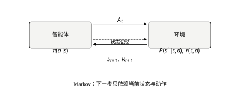
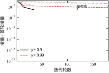
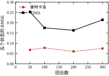
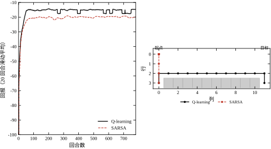
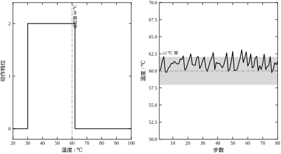
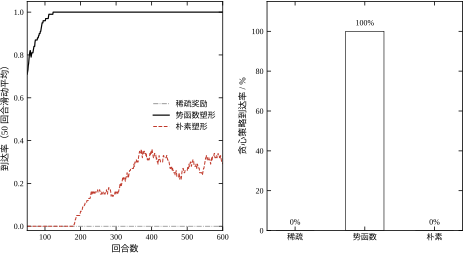

第 30 章用 LQR 与 MPC 求最优控制，前提是 (A,B) 已知；第 31 章在“目标算得出、梯度算不出”时改用无梯度法，前提是“给定一组参数，能离线拿回一个数”。两章共享一个隐含假设：对象可以被反复调用，且调用很便宜。
工程上还有第三种情形：模型不知道，离线评价也做不了，但你可以在线“试”——把动作加到对象上，观察下一时刻的状态和一个标量奖励。加热炉的升温曲线、注塑机的保压切换、无人机的姿态修正、路口的配时调整，都属于这一类。你拿不到 A、B，也写不出目标函数的解析式，手头只有一条轨迹
s_0,a_0,r_0,s_1,a_1,r_1,\dots,s_T \tag{32-1}
强化学习处理的正是这种“只有轨迹、没有模型”的问题。它和前面两章的关系可以这样定位：第 30 章是“模型已知，求一个反馈律”；第 31 章是“模型未知但可离线调用，求一组参数”；本章是“模型未知且只能在线交互，求一个策略 \pi(a\mid s)”。
所以 RL 不是“更高级的优化”。它改变的是信息结构：优化器看到的是“参数→目标值”的映射，RL 看到的是“状态→动作→下一状态+奖励”的样本流。这个区别解释了后面所有的工程差异——为什么样本效率是核心指标、为什么探索是一个独立问题、为什么“训练得好”不等于“部署得稳”。
顺带划清一条界线：RL 与自适应控制（MRAC、STR）都在线学习，但学的东西不同。自适应控制学的是模型参数，结构固定、目标明确（跟踪误差）；RL 学的是策略或值函数，允许非线性、离散动作、非二次代价，代价是样本需求高两三个数量级。有可靠的结构化模型时，自适应控制是更省的选择；结构未知、目标只能靠回报表达时，才轮到 RL。
单步奖励是近视的。以加热炉为例：把设定温度往上推，每一步的瞬时产出都更高；但温度越高，失控风险越大，一旦进入不可逆的副反应，后面所有步都在亏损。奖励只描述“当下”，回报描述“从现在到未来”。
从时刻 t 起的折扣回报定义为
G_t=\sum_{k=0}^{\infty}\gamma^{k}r_{t+k},\qquad \gamma\in[0,1) \tag{32-2}
\gamma 不是数学装饰，它是“愿意往后看多远”的旋钮。几何级数给出有效视野
H_{\mathrm{eff}}=\sum_{k=0}^{\infty}\gamma^{k}=\frac{1}{1-\gamma} \tag{32-3}
\gamma=0.9 时约 10 步，\gamma=0.99 时约 100 步。把它换算成物理时间要乘控制周期：T_s=1 s、\gamma=0.99 意味着策略关心未来 100 s；T_s=0.01 s 时同样的 \gamma 只关心 1 s。所以 \gamma 不能脱离采样周期单独讨论，这是控制背景的读者最容易忽略的一点。若对象的慢模态时间常数为 \tau，一个可用的起点是 \gamma\approx e^{-T_s/\tau}，它让“折扣”与“物理衰减”同尺度。
第二个难点是信用分配（credit assignment）：一条 200 步的轨迹最后只拿到一个奖励，这个奖励该记在哪一步？控制工程里也有同样的问题——稳态误差是几十个周期累积出来的，很难说清是哪个周期的哪个动作造成的。后面的蒙特卡洛、时序差分、Q-learning 三种方法，本质上是三种不同的“记账方式”，差别只在“用多长的实际数据去替换估计”。
这个例子小到可以手算，却足以说明本章的全部困难。
设对象有两个状态：正常 S 与超温 F；两个动作：继续 p 与冷却 c。转移与奖励如下：
取 \gamma=0.9，先算“永远继续”这个策略。在 F 上有 V(F)=-10+0.9V(F)，故 V(F)=-100；代回 S：
V(S)=2+0.9\bigl(0.9V(S)+0.1V(F)\bigr)=2+0.81V(S)-9 \tag{32-4}
解得 V(S)=-36.84。每一步都拿到 +2 的策略，长期回报是 -36.8。 近视指标在这里给出了与长期利益完全相反的结论。
再算“超温就冷却”：V(F)=-3+0.9V(S)，与 (32-4) 联立得 V(S)=15.87、V(F)=11.28。同一组奖励，只改了故障后的动作，回报从 -36.84 变成 +15.87，差 52.7。这个差不是调参调出来的，是“往后看”看出来的。
这个例子还能看清策略迭代的走法。从“永远继续”出发：第一轮评估得 (-36.84,-100)，改进时两个状态都换成冷却，因为 Q(c)=-34.16>-36.84、Q(c)=-36.16>-100；评估新策略得 (-10,-12)。第二轮在 S 上发现继续更好——Q(p)=2+0.9(0.9\times(-10)+0.1\times(-12))=-7.18，高于 Q(c)=-10——于是改进为 (p,c)，评估得 (15.87,11.28)。第三轮两个状态都没有动作可换，收敛。三轮评估、两轮实际改动。
注意一个细节：第一轮把 S 也换成冷却是“错”的方向，但策略迭代照样收敛。原因是策略改进定理只要求每一步单调不减，不要求每一步都朝最优走。这条性质是表格型方法可靠工作的根，也是它对初值不敏感的原因。 §32.3.1 给出证明，§32.6.1 用代码复现这三个数。
表 32-1 把三种“求策略”的方式放在一起。
表 32-1 三种求策略的方式
| 项 | LQR（第 30 章） | MPC（第 58/80 章） | 本章 RL |
|---|---|---|---|
| 需要模型 | 需要 (A,B) | 需要预测模型 | 不需要显式模型 |
| 需要的数据 | 无 | 当前状态 | 状态-动作-奖励轨迹 |
| 解的形式 | 线性反馈 u=-Kx | 滚动优化 | 策略 \pi(a\mid s) 或 Q(s,a) |
| 最优性 | 全局（线性二次） | 有限时域局部 | 渐近，依赖探索 |
| 约束 | 硬约束需扩展 | 天然支持 | 需动作屏蔽或罚项 |
| 典型失败 | 模型失配 | 模型失配、算力不足 | 分布偏移、奖励误设 |
表的最后一行是重点。前三列的失败都可以归因到“模型不准”，RL 的失败却常常归因到“数据不对”：策略只见过它自己走过的状态，一旦部署时遇到没见过的状态，Q 值就是外推，可能错得离谱。第 33 章的离线 RL 与第 36 章的安全约束，都是围绕这一点展开的。
还有两个常被混淆的点。其一，RL 不要求“无模型”，它只要求“不用模型求导”。 仿真器很准时，完全可以用它生成数据来训练策略，只是不要拿它的梯度去做梯度下降。其二，模型已知时用 RL 是绕远路。 线性二次问题有 Riccati 方程一步到位，用 RL 去逼近它，等于用几万次采样换一个本来可以闭式写出的 K。
问题一：状态与动作怎么离散？ 表格型方法的规模是 |S|\times|A|，连续系统必须先量化。量化太粗，最优策略被抹平；太细，每个格子分不到样本。判据与做法在 §32.4.1。
问题二：\gamma 取多少？ 它等于有效视野，必须与物理时间常数对齐，换算关系是 \gamma\approx e^{-T_s/\tau}。取小了策略短视，取大了方差爆炸。§32.2.2 与 §32.6.2 分别给定义与实测。
问题三：探索留多少？ \varepsilon-greedy 的 \varepsilon 决定“花多少样本买信息”。固定 \varepsilon 的 Q-learning 收敛到的是“带探索的策略”，不是最优策略。§32.3.5 说明为什么，§32.4.3 给衰减方案。
问题四：on-policy 还是 off-policy？ SARSA 学“我正在执行的政策”，Q-learning 学“最优政策”。安全关键的场合前者更可取，因为它把探索带来的风险也算进了值里。§32.6.4 的悬崖实验给出两条路径的差别。
问题五：样本从哪来、值多少钱？ 真实设备上一次试验可能几小时且有损耗，仿真里一次几毫秒。样本成本决定了该用 TD 还是 MC、该不该上函数逼近。这笔账在 §32.5.5。
这五个问题答不上来，调任何超参数都是碰运气。
§32.2 建立 MDP 与 Bellman 方程，把“回报”写成一个可解的不动点，并交代三个建模选择（状态、动作、奖励）与折扣因子的三重身份；§32.3 从这个不动点出发，推出策略迭代、值迭代、蒙特卡洛、时序差分、Q-learning、SARSA、策略梯度与 Actor-Critic，比较三条求解路线的代价，并标出它们与自适应控制的亲缘关系；§32.4 讲表格实现里的量化、更新顺序、探索、覆盖率与量纲一致的超参数配置；§32.5 讲奖励设计、训练环境构建、安全约束、多目标的优先级结构、接进 DCS 时的接口一致性，以及“什么时候不该用”；§32.6 用七组实验把前面的每个断言变成一个可复现的数，并说明同一个策略为何能报出差出四倍的数字；§32.7 收成一张决策表与十条错误。
如果只有半小时，读 §32.1.3 的反例、§32.3.4 的 TD 误差分解、§32.7.2 的决策表。
一句话核心：强化学习把“求最优控制”换成了“在样本流上估计值函数”，代价是样本，收益是不需要模型。
强化学习把“在线试错”抽象成一个五元组 \mathcal{M}=(\mathcal{S},\mathcal{A},P,r,\gamma)：状态集 \mathcal{S}、动作集 \mathcal{A}、转移核 P、奖励函数 r、折扣因子 \gamma。前四个描述对象，最后一个描述目标。
转移与奖励的精确定义是
P(s'\mid s,a)=\Pr\{S_{t+1}=s'\mid S_t=s,A_t=a\},\qquad r(s,a)=\mathrm{E}[R_{t+1}\mid S_t=s,A_t=a] \tag{32-5}
图 32-1 画出了交互回路：智能体在 S_t 上选 A_t，环境返回 R_{t+1} 与 S_{t+1}。这个回路与第 44 章的数字控制回路形状相同，区别只在“控制器”换成了“策略”，“误差”换成了“奖励”。

图里从环境指出的 S_t 有两条去向：一条进入策略，另一条与 A_t 一起决定下一拍的状态与奖励。后一条就是 Markov 性——给定 S_t 与 A_t，S_{t+1} 与更早的历史条件独立。 整章的所有算法都建立在这条性质上；它不成立时，Bellman 方程就不成立，后面的推导全部作废。
控制工程里，Markov 性对应“状态完备性”。一个常见反例：对象是一阶惯性加两拍纯延迟，y_{t+1} 依赖 u_{t-1}，若状态只取当前测量 y_t，则同一个 s_t 下执行同一个 a_t，下一步可能落在两个不同的值上——P 不是函数，而是“关系”。修法是把延迟拍数补进状态：
S_t=(y_t,\;y_{t-1},\;y_{t-2}) \tag{32-6}
补几拍取决于延迟与采样周期的比值。这一步没做对，后面无论用多好的算法，学到的都是一个“看起来收敛、实际不可用”的策略。 §32.4.1 会把这条判据变成可执行的检查。
策略是“在状态上选动作”的规则。确定策略写成 a=\pi(s)，随机策略写成 \pi(a\mid s)。表格型方法两者都能用，但探索与策略梯度都需要随机策略：确定策略的 \varepsilon-greedy 只是把随机性外包给了“探索机制”，而策略梯度要对 \pi 求导，必须有一个连续可调的概率分布。
给定策略 \pi，两条值函数分别回答两个问题。状态值函数回答“站在这里、按 \pi 走下去，预期能拿多少”：
V^{\pi}(s)=\mathrm{E}_{\pi}\Bigl[\sum_{k=0}^{\infty}\gamma^{k}R_{t+k+1}\;\Big|\;S_t=s\Bigr] \tag{32-7}
动作值函数回答“站在这里、先做这个动作、之后按 \pi 走，预期能拿多少”：
Q^{\pi}(s,a)=\mathrm{E}_{\pi}\Bigl[\sum_{k=0}^{\infty}\gamma^{k}R_{t+k+1}\;\Big|\;S_t=s,A_t=a\Bigr] \tag{32-8}
两者由一步全概率公式相连：
V^{\pi}(s)=\sum_{a\in\mathcal{A}}\pi(a\mid s)\,Q^{\pi}(s,a) \tag{32-9}
(32-9) 是后面一切“改进”的支点：只要对每个 s 能算出 Q^{\pi}(s,\cdot)，就能在不改变环境的前提下换一个更好的动作。 这也是“策略评估”与“策略改进”能拆成两步的原因。
两条值函数之差叫优势函数 A^{\pi}(s,a)=Q^{\pi}(s,a)-V^{\pi}(s)。它衡量“这个动作比平均水平好多少”，A 的符号直接给出改进方向。§32.3.6 会看到，策略梯度的方差主要来自 Q 的绝对值，减去 V 之后方差大幅下降——这不是技巧，是“只关心相对好坏”的必然结果。
把 (32-8) 的期望按“第一步”展开：第一步拿 r(s,a)，之后落到 s'，从那里起的期望恰好是 V^{\pi}(s')。于是
Q^{\pi}(s,a)=r(s,a)+\gamma\sum_{s'\in\mathcal{S}}P(s'\mid s,a)\,V^{\pi}(s') \tag{32-10}
把 (32-10) 代回 (32-9)，得到只含 V^{\pi} 的方程：
V^{\pi}(s)=\sum_{a}\pi(a\mid s)\Bigl[r(s,a)+\gamma\sum_{s'}P(s'\mid s,a)V^{\pi}(s')\Bigr] \tag{32-11}
这就是 Bellman 期望方程。它的形式值得盯住看：未知量 V^{\pi} 在等号两边都出现，且只以一次幂出现。 所以它是 |\mathcal{S}| 个线性方程，写成矩阵形式是
\mathbf{v}_{\pi}=\mathbf{r}_{\pi}+\gamma P_{\pi}\mathbf{v}_{\pi} \;\Longrightarrow\; \mathbf{v}_{\pi}=(I-\gamma P_{\pi})^{-1}\mathbf{r}_{\pi} \tag{32-12}
其中 P_{\pi} 是按 \pi 加权后的转移矩阵，\mathbf{r}_{\pi} 是期望即时奖励。\gamma<1 保证了 I-\gamma P_{\pi} 可逆：P_{\pi} 的谱半径不超过 1，所以 \gamma P_{\pi} 的谱半径严格小于 1，Neumann 级数收敛。
这个逆矩阵有明确的物理意义：(I-\gamma P_{\pi})^{-1}=\sum_{k=0}^{\infty}\gamma^{k}P_{\pi}^{k}，它的第 (s,s') 元就是“从 s 出发、按 \pi 走，折扣后平均访问 s' 多少次”。它把“值函数”翻译成了“访问频次”，后面估计样本量、判断探索是否充分，用的都是这个量。
直接求解 (32-12) 的代价是 O(|\mathcal{S}|^{3})。状态数上万时这个代价不可接受，于是有了迭代法（§32.3.1）与采样法（§32.3.3）。这正是“精确解”与“可扩展解”的分界：小问题上解线性方程最省事，大问题上只能迭代。
值函数回答“这个策略多好”，最优值函数回答“最好能多好”：
V_{*}(s)=\max_{\pi}V^{\pi}(s) \tag{32-13}
对有限 MDP，这个最大值可以由一个确定策略达到，且 V_{*} 满足
V_{*}(s)=\max_{a\in\mathcal{A}}\Bigl[r(s,a)+\gamma\sum_{s'}P(s'\mid s,a)V_{*}(s')\Bigr] \tag{32-14}
对应的动作值函数是
Q_{*}(s,a)=r(s,a)+\gamma\sum_{s'}P(s'\mid s,a)\max_{a'}Q_{*}(s',a') \tag{32-15}
(32-14) 与 (32-11) 只差一处：求和换成了取最大。这一处差别决定了两个方程的性质完全不同——(32-11) 是线性的，(32-14) 不是。\max 是一族线性函数的上包络，所以 V_{*} 是分段线性的凸函数（在 |\mathcal{S}| 维空间里），不能用解线性方程的办法求。
但 (32-14) 有一个更强的性质：它定义了一个压缩映射。记 Bellman 最优算子为 \mathcal{T}，则对任意两个值函数
\|\mathcal{T}V-\mathcal{T}U\|_{\infty}\le\gamma\|V-U\|_{\infty} \tag{32-16}
因为 \max 是 1-Lipschitz 的。\gamma<1 时 \mathcal{T} 是严格压缩的，由 Banach 不动点定理，V_{*} 存在、唯一，且从任意初值迭代都收敛。这条不等式是整章唯一一个“无条件成立”的保证，§32.3.2 会把它变成收敛速度与误差界。
一旦有了 Q_{*}，最优策略就是逐点取最大：
\pi_{*}(s)=\arg\max_{a}Q_{*}(s,a) \tag{32-17}
(32-17) 只做比较、不做运算，这是 RL 在“目标不可微”时仍然能工作的根本原因，也是它与第 31 章“只比较函数值”的启发式方法的共同点。区别在于：第 31 章比较的是“同一组参数下的目标值”，这里比较的是“同一个状态下不同动作的未来回报”。
把 (32-14) 的特例写出来，就能看到它与第 30 章的关系。取 \gamma=1、二次代价 r=-x^{\top}Qx-u^{\top}Ru、线性动态 x^{+}=Ax+Bu，并假设 V_{*}(x)=x^{\top}Px。代入 (32-14)：
x^{\top}Px=\max_{u}\Bigl[-x^{\top}Qx-u^{\top}Ru+(Ax+Bu)^{\top}P(Ax+Bu)\Bigr] \tag{32-18}
对 u 求导得 u_{*}=-(R+B^{\top}PB)^{-1}B^{\top}PA\,x，代回即得离散 Riccati 方程
P=Q+A^{\top}PA-A^{\top}PB\,(R+B^{\top}PB)^{-1}B^{\top}PA \tag{32-19}
这就是 LQR。 它的“值函数”是二次型，“策略”是线性反馈，两者都能闭式写出。Bellman 方程在连续时间下的对应物是 HJB 方程
-\frac{\partial V}{\partial t}=\min_{u}\Bigl\{L(x,u)+\nabla V^{\top}f(x,u)\Bigr\} \tag{32-20}
LQR 之所以能解，是因为 (32-20) 的二次型拟设把偏微分方程化成了代数方程。一旦代价不是二次、动态不是线性，这个拟设失效，HJB 就只能数值求解——RL 是它的采样版本。
三个概念的对应关系可以一句话说清：值迭代是无限时域的动态规划，MPC 是有限时域加滚动，RL 是在不知道 P 的情况下估计同一个 Bellman 算子。 所以看到“RL 能解 MPC 解不了的问题”这种说法时要警惕：MPC 的困难是算力与模型，RL 的困难是样本与分布；它们不是同一把尺子上的长短。
最后提醒一个符号约定。控制里习惯“最小化代价”，RL 里习惯“最大化奖励”，两者只差一个负号，但折扣的处理不能只靠负号：\gamma<1 的 RL 目标等价于给代价加了一个随时间的衰减权重，它会让策略偏向“近期收益”，与“无限时域平均代价”不是同一个问题。做控制整定时若把 \gamma 设成 0.9 而采样周期是 1 s，等于只优化前 10 s，稳态性能自然被忽略。
表格型方法为每个 (s,a) 存一个数。账很容易算，也很容易算崩。
表 32-2 几个典型问题的表格规模
| 系统 | 状态维数 | 每维档数 | 状态数 | 动作数 | Q 表规模 |
|---|---|---|---|---|---|
| 两状态加热炉（§32.1.3） | 1 | 2 | 2 | 2 | 4 |
| 温度调节（§32.6.5） | 1 | 21 | 21 | 3 | 63 |
| 倒立摆（四维量化） | 4 | 20 | 1.6\times10^{5} | 2 | 3.2\times10^{5} |
| 三关节机械臂 | 6 | 11 | 1.77\times10^{6} | 5 | 8.9\times10^{6} |
| 十维线性系统 | 10 | 10 | 10^{10} | 5 | 5\times10^{10} |
按双精度 8 字节计：倒立摆的 Q 表占 2.6 MB，三关节机械臂占 71 MB，十维系统要 400 GB。每加一维，规模乘以档数——这就是维度诅咒的算术形式。
比内存更紧的是样本。要让每个 (s,a) 的估计误差降到可用水平，通常需要被访问几十次；十维系统于是需要 10^{12} 量级的样本，按每秒 1000 次交互算要三十多年。所以表格型方法的适用边界不是“状态多不多”，而是“|S|\times|A| 乘上每格所需样本数，能不能在可接受的时间内采到”。
这条边界正是第 33 章的起点：用函数逼近把“每格一个数”换成“一个参数化函数”，用泛化换样本。代价是收敛保证变弱——表格型的收敛定理到函数逼近那里大多失效。先看清表格能走多远，才知道为什么要换成网络。
\gamma 在公式里只出现一次，但在工程上它同时扮演三个角色。分不清这三个角色，是“调参调不动”的常见原因。
身份一：压缩因子。 式 (32-16) 说 Bellman 算子每作用一次，误差至少缩 \gamma 倍。误差放大因子 \gamma/(1-\gamma) 因此直接决定两件事：值迭代要多少轮才能把误差压到 \varepsilon 以下（式 32-25 给出 k\ge\ln(\|V_0-V_*\|_\infty/\varepsilon)/\ln(1/\gamma)），以及估计误差会被放大多少倍。\gamma=0.9 时放大 9 倍，\gamma=0.99 时放大 99 倍。后者意味着一个 1\% 的奖励建模误差，会在值函数里变成接近 100\% 的偏差。
身份二：有效时域。 式 (32-3) 的 H_{\rm eff}=1/(1-\gamma) 是“回报里一共算了多少步”的一阶答案。更实用的口径是 95\% 权重落在哪里：
k_{95}=\frac{\ln 0.05}{\ln\gamma}
\gamma=0.9 时 k_{95}=28.4，\gamma=0.99 时 k_{95}=298.1。采样周期 T_s=1 s 时，这两个数分别读作“只看未来 28 秒”和“只看未来 5 分钟”。这就是 \gamma 的物理含义——它不是折扣，它是视野。
身份三：代价的指数权重。 把 \gamma^{k} 写成 e^{-\lambda kT_s}，得
\lambda=-\frac{\ln\gamma}{T_s}
\gamma=0.9、T_s=1 s 对应 \lambda=0.105\ \mathrm{s^{-1}}，时间常数 9.5 s。也就是说，折扣回报等价于给每一步代价乘了一个时间常数为 9.5 s 的一阶低通权重。这个等价很有用：控制工程师对“时间常数”有直觉，对“折扣”没有。但它也提醒一件事——折扣不是平均代价。无限时域平均代价准则对所有时刻一视同仁，折扣准则偏向近期；两者的最优策略在有的问题上不同，换准则必须重算，不能靠“\gamma 取接近 1”糊过去。
两个陷阱要单独说。
陷阱一：\gamma\to1 的数值病态。 式 (32-12) 要解 (I-\gamma P_\pi)\mathbf{v}_\pi=\mathbf{r}_\pi。当 P_\pi 有特征值 1（比如存在吸收态或周期结构）时，该矩阵的最小特征值约为 1-\gamma，条件数约为 1/(1-\gamma)。\gamma=0.999 时条件数是 1000，双精度下解方程要丢掉约 3 位有效数字；\gamma=0.99999 时条件数 10^{5}，结果基本不可信。“把 \gamma 调到 0.999 更接近最优控制”这句话在数学上是对的，在数值上是错的——除非改用专门的迭代解法并接受更慢的收敛。
陷阱二：\gamma 与回合长度必须自洽。 若回合在 T 步被截断，而 k_{95}>T，那么被折扣加权的那部分回报根本没被采到，值函数学的是“被截断的目标”，偏差随 k_{95}/T 增大。反过来，T\gg k_{95} 时后半段轨迹对目标几乎没有贡献，等于白采。经验配比是 T\approx3/(1-\gamma)：\gamma=0.9 配 30 步左右的回合，\gamma=0.99 配 300 步。E2 的实验里值迭代 34 轮把误差压到 8.65\times10^{-3}，而把 \gamma 调高后同样精度要 340 轮、且残差停在 9.88\times10^{-2} 下不去——轮数按 1/\ln(1/\gamma) 增长是可以预期的，残差压不下去则是数值精度先到极限了。
工程上定 \gamma 的顺序应该反过来：先写下“你希望控制器看多远”（T_{95}，由对象的主导时间常数定），再由 \gamma=0.05^{T_s/T_{95}} 反算；然后检查两件事——回合一幕的长度够不够 T_{95}，以及 \gamma/(1-\gamma) 放大后的误差你能否接受。三步做完再写代码，比在 0.9 和 0.99 之间试一个星期有效。
RL 没有“模型”，它的模型就是这三个选择。选错了，算法再好也只是更快地学到一个错的策略。
状态：要满足 Markov 性，而不是“把能测的都放进去”。 Markov 性要求“给定当前状态，未来与历史无关”。三种常见破坏方式：其一，漏掉关键变量（比如只测炉温不测加热功率，同样的温度下升温趋势相反）；其二，漏掉延迟（执行器有 3 步纯延迟时，当前动作的效果要 3 步后才出现，状态里必须显式带上最近 3 步的动作）；其三，把噪声当状态（把未滤波的瞬时值放进状态，等于让策略对噪声做反应）。第一种靠机理分析补，第二种靠式 (32-6) 的堆叠补，第三种靠滤波补。检验方法只有一个：把同一状态的两批样本拿出来，看 TD 误差的平均方向是否一致；方向相反，说明状态里缺东西。
动作：绝对量还是增量，选错了会带来两个麻烦。 绝对动作（直接给阀门开度）语义清楚，但策略抖动会直接传到执行器；增量动作（给“开大/关小”）天然平滑，且便于处理积分饱和，代价是动作的效果依赖当前工作点，Q 函数在动作维度上的形状更复杂。控制里还有第三种写法：让 RL 输出设定值、让底层 PID 输出阀门开度——这样动作的物理意义是“我希望温度到多少”，量纲与安全边界都好定义，也是 §32.5.4 分层结构的由来。
奖励：一步延迟与量纲是两个独立的坑。 量纲在 §32.4.9 讲，这里只说延迟。若奖励在动作之后 k 步才到达（比如实验室的离线化验），那么 (s_t,a_t,r_t,s_{t+1}) 这条样本里的 r_t 其实属于 a_{t-k}。直接喂给算法，等于给动作打了错的标签，学出来的策略会系统性地偏移。处理方式有两种：把奖励按时间戳对齐（需要记录动作序号），或者把“等待期”建进状态（把最近 k 步的动作放进状态）。前者需要数据管道支持，后者需要状态维数增加 k 倍。
三个选择是耦合的，这是最容易忽略的一点。举个具体的例子：状态量化太粗（每维只有 5 档），两个不同工况被归到同一格；此时动作 +1 与 0 的效果被平均掉，奖励差只有噪声量级；算法看到的是“动作无所谓”，于是学出一个常量策略。表面上是“算法没学会”，根子上是状态分辨率不够，把动作的效果抹平了。 反过来，状态太细而样本不够，每个格子只被访问两三次，Q 的估计全是噪声，\arg\max 选的是噪声的最大值（第 31 章 §31.6.5 的乐观偏差）。所以“状态分几档”这件事，必须和样本预算一起定（§32.4.1），不能分开拍板。
策略迭代把“求最优”拆成两个交替的小问题：评估当前策略到底值多少，改进它在每个状态上换一个更好的动作。
评估就是解 (32-11)。状态多时不解方程，改用迭代：从任意 \mathbf{v}_0 出发，反复把 Bellman 期望算子作用上去，
V_{k+1}(s)=\sum_{a}\pi(a\mid s)\Bigl[r(s,a)+\gamma\sum_{s'}P(s'\mid s,a)V_{k}(s')\Bigr] \tag{32-21}
因为算子也是 \gamma-压缩的，误差按 \gamma^{k} 衰减：\gamma=0.9 时每轮缩 10%，要缩到 10^{-3} 需 66 轮。
改进则用 (32-9) 算出的 Q^{\pi} 逐点取最大：
\pi'(s)=\arg\max_{a}Q^{\pi}(s,a) \tag{32-22}
定理（策略改进）：若 \pi' 由 (32-22) 得到，则 V^{\pi'}(s)\ge V^{\pi}(s) 对所有 s 成立，且只要有一处严格，就至少有一处严格。
证明只用三步。第一，由定义 Q^{\pi}(s,\pi'(s))\ge Q^{\pi}(s,\pi(s))=V^{\pi}(s)。第二，把 Q 展开成“一步奖励 + 下一状态的值”，并对下一状态再用一次同样的不等式，得到
V^{\pi}(s)\le \mathrm{E}\bigl[R_{t+1}+\gamma V^{\pi}(S_{t+1})\bigr] \le \mathrm{E}\bigl[R_{t+1}+\gamma Q^{\pi}(S_{t+1},\pi'(S_{t+1}))\bigr]\le\cdots \tag{32-23}
第三，把这条链无限展开，右边正是“从 s 出发、先按 \pi' 走一步、之后按 \pi 走”的回报，再对后续每一步重复同样的替换，极限就是 V^{\pi'}(s)。\square
这条证明解释了两件事。其一，改进不要求“一步到位”——只要每个状态的新动作不比旧的差，整体就不比原来差，所以 §32.1.3 第一轮把 S 换成冷却是允许的，第二轮还能换回来。其二，有限 MDP 下策略只有有限个，严格改进不可能无限进行，算法必然在有限步停在 \pi_{*}。这是表格型方法少有的“有限时间终止”保证。
策略迭代每轮都要把当前策略评估到收敛，代价大。值迭代把两步合成一步，直接对最优算子做不动点迭代：
V_{k+1}(s)=\max_{a}\Bigl[r(s,a)+\gamma\sum_{s'}P(s'\mid s,a)V_{k}(s')\Bigr] \tag{32-24}
由 (32-16) 立刻得到误差界
\|V_{k}-V_{*}\|_{\infty}\le\gamma^{k}\|V_{0}-V_{*}\|_{\infty} \tag{32-25}
收敛速度只由 \gamma 决定，与状态数、动作数无关。 这是值迭代最漂亮的地方，也是最容易被误读的地方：\gamma\to1 时 \gamma^{k} 衰减得极慢，收敛需要的轮数按 1/(1-\gamma) 发散。以初值误差 1 个单位计，\gamma=0.9、要求误差 10^{-3} 需 k\ge\ln(10^{-3})/\ln 0.9\approx66 轮；\gamma=0.99 时同样精度要 688 轮，约是十倍。折扣因子在算法层面上的代价，是收敛轮数按 1/(1-\gamma) 增长。
实际停机时拿不到 V_{*}，只能用相邻两轮的差做判据：\|V_{k+1}-V_{k}\|_{\infty}<\varepsilon。这时真实误差有个放大因子，因为
\|V_{k}-V_{*}\|_{\infty}\le\frac{\gamma}{1-\gamma}\|V_{k+1}-V_{k}\|_{\infty} \tag{32-26}
\gamma=0.9 时放大 9 倍。用“相邻差小于 10^{-3}”停机，真实误差可能到 9\times10^{-3}，这是实现里最常见的低估。
还有一层：值迭代的产物是值函数，最终要转成策略。若 \|V_{k}-V_{*}\|_{\infty}\le\varepsilon，则由 V_{k} 贪心得到的 \pi_{k} 满足
\|V^{\pi_{k}}-V_{*}\|_{\infty}\le\frac{2\gamma\varepsilon}{1-\gamma} \tag{32-27}
\gamma=0.9 时放大 18 倍。想把策略的性能差距控制在 0.01 以内，值函数误差必须小于 5.6\times10^{-4}，对应 72 轮。“值函数收敛”与“策略收敛”不是一回事，前者要比后者严一个量级。
前两节都要求知道 P。真实对象给不出 P，只能采样。蒙特卡洛（MC）的做法最直接：跑完一整条轨迹，用实际回报去平均，
V(S_t)\leftarrow V(S_t)+\alpha\bigl[G_t-V(S_t)\bigr] \tag{32-28}
\alpha=1/N(S_t) 时就是样本均值。它有两个好性质：无偏（\mathrm{E}[G_t\mid S_t=s]=V^{\pi}(s)），不需要模型。也有一个坏性质：方差大。
若每一步奖励独立、方差为 \sigma^{2}，则回报的方差是
\mathrm{Var}[G_t]=\sigma^{2}\sum_{k=0}^{\infty}\gamma^{2k}=\frac{\sigma^{2}}{1-\gamma^{2}} \tag{32-29}
\gamma=0.9 时是 5.26\sigma^{2}，标准差是单步奖励的 2.29 倍。\gamma=0.99 时放大到 50 倍方差、7.1 倍标准差。视野越长，MC 的嗓门越大。 要把它压到 1% 的精度，样本量按方差反比增长，\gamma=0.99 时比 \gamma=0.9 多要近十倍。
MC 还有一个实现细节：首次访问（first-visit）与每次访问（every-visit）。前者只在一条轨迹里第一次到达 s 时更新，后者每次到达都更新。两者都收敛到 V^{\pi}，但前者的样本被丢掉一部分，后者在小 \alpha 下更稳。表格实现通常用每次访问，因为它的有效样本数更多。
TD(0) 把 (32-28) 的 G_t 换成“一步奖励 + 下一状态的当前估计”：
V(S_t)\leftarrow V(S_t)+\alpha\bigl[\underbrace{R_{t+1}+\gamma V(S_{t+1})}_{\text{TD 目标}}-V(S_t)\bigr] \tag{32-30}
方括号里的量叫 TD 误差 \delta_t。这个替换带来两个后果，一好一坏。
好处是方差小。 TD 目标的方差约 \sigma^{2}(1+\gamma^{2})=1.81\sigma^{2}（\gamma=0.9），而 MC 是 5.26\sigma^{2}——方差降到约三分之一。代价是引入了偏差：V(S_{t+1}) 本身是估计值，在收敛前不准。
偏差有多大？ 对固定的 V 取期望，
\mathrm{E}[\delta_t\mid S_t=s]=r(s,\pi(s))+\gamma\sum_{s'}P(s'\mid s,\pi(s))V(s')-V(s)=(\mathcal{T}_{\pi}V)(s)-V(s) \tag{32-31}
也就是说，TD 误差的期望恰好是“Bellman 残差”。这解释了 TD 为什么能工作：它是在用样本估计残差，残差为零就是不动点。也解释了它的偏差从哪来：只要 V\ne V^{\pi}，这个期望就不为零，更新方向就带着系统误差。
两者的差别可以概括成一句话：MC 用“真实的未来”做目标，无偏但吵；TD 用“猜测的未来”做目标，安静但会被猜测带偏。 在表格、\gamma<1、所有状态被无限次访问的条件下，两者都收敛到 V^{\pi}；但在有限样本下，TD 通常更快达到相同的均方误差，这就是它成为主流的原因。§32.6.3 会用同一批轨迹把两条 RMSE 曲线画出来。
控制里真正想要的是 Q，因为它直接给出动作。Q-learning 的更新是
Q(S_t,A_t)\leftarrow Q(S_t,A_t)+\alpha\bigl[R_{t+1}+\gamma\max_{a'}Q(S_{t+1},a')-Q(S_t,A_t)\bigr] \tag{32-32}
SARSA 只改一处：把 \max 换成“下一步实际执行的动作”，
Q(S_t,A_t)\leftarrow Q(S_t,A_t)+\alpha\bigl[R_{t+1}+\gamma Q(S_{t+1},A_{t+1})-Q(S_t,A_t)\bigr] \tag{32-33}
这一处差别决定了它们学的是两个不同的东西。Q-learning 学 Q_{*}，与行为策略无关（off-policy）；SARSA 学“当前行为策略”的值（on-policy）。 若行为策略是 \varepsilon-greedy，SARSA 学的是“带 \varepsilon 概率乱走”的那个策略的值，Q-learning 仍然学最优策略。
安全性上的后果很直接。悬崖边上，Q-learning 会学到“贴着崖边走”的最优路径，因为它假设下一步总取最优动作；但它自己在探索时偶尔会掉下去。SARSA 把“偶尔乱走”算进了值里，于是学会绕远路。§32.6.4 的两条路径长度会给出这个差别的量级。
两者都有收敛定理，条件相同：每个 (s,a) 被访问无限次，且步长满足 Robbins–Monro 条件
\sum_{t}\alpha_t=\infty,\qquad \sum_{t}\alpha_t^{2}<\infty \tag{32-34}
\alpha_t=1/t 满足，常数 \alpha 不满足——常数步长下算法跟踪的是一个“移动目标”，最终在最优值附近的一个邻域里游走，不会精确收敛。 这对工程反而是好事：对象时变时，常数步长能跟上漂移。
Q-learning 还有一个系统性偏差：最大化偏差。若两个动作的真实值都是 0，但估计各带标准差 \sigma 的噪声，则 \mathrm{E}[\max(\hat Q_1,\hat Q_2)]\approx0.564\sigma>0。噪声越大，高估越严重；高估又让算法更倾向于选“被高估”的动作，形成正反馈。修法是双估计（double Q-learning）：两套表交替更新，用一套选动作、另一套评估。代价是样本效率减半，收益是去掉这个 0.56\sigma 量级的高估。
前面所有方法都先学值、再由值导出策略。策略梯度反过来：把策略参数化成 \pi_{\theta}(a\mid s)，直接最大化期望回报
J(\theta)=\mathrm{E}_{\pi_{\theta}}\Bigl[\sum_{t=0}^{\infty}\gamma^{t}R_{t+1}\Bigr] \tag{32-35}
难点是 J 对 \theta 的依赖藏在“采样分布”里——改变 \theta 会改变走过的状态，状态分布又影响回报。策略梯度定理绕开了这个难点：
\nabla_{\theta}J(\theta)=\mathrm{E}_{\pi_{\theta}}\Bigl[\nabla_{\theta}\ln\pi_{\theta}(A_t\mid S_t)\,Q^{\pi_{\theta}}(S_t,A_t)\Bigr] \tag{32-36}
它的直觉是“加权的似然比”：某个动作带来的回报高于平均，就提高它的概率；低于平均，就降低。\nabla\ln\pi 是“提高这个动作概率的方向”，Q 是“这个动作值多少”，两者相乘就是更新方向。这个式子不要求环境可微，只要求策略可微。
REINFORCE 用一条轨迹的回报 G_t 代替 Q，得到无偏但高方差的估计。方差主要来自 Q 的绝对值：如果所有动作的 Q 都在 100 附近、彼此只差 1，那么梯度的“信号”是 1，“噪声”是 100。减去一个只依赖状态的基线 b(s) 不改变期望，因为
\mathrm{E}_{a\sim\pi}\bigl[\nabla\ln\pi(a\mid s)\,b(s)\bigr]=b(s)\sum_{a}\nabla\pi(a\mid s)=b(s)\nabla 1=0 \tag{32-37}
取 b(s)=V^{\pi}(s) 时，乘子变成优势 A=Q-V，信号与噪声的比例立刻改善。这不是技巧，而是“只有相对好坏才携带梯度信息”的直接推论。
REINFORCE 要等一条轨迹跑完才能更新，且用 G_t 估计 Q，方差仍大。Actor-Critic 把“策略”与“值函数”分成两个学习器：Actor 是 \pi_{\theta}，Critic 是 V_{w}，后者提供低方差的 TD 误差作为优势的估计：
\delta_t=R_{t+1}+\gamma V_{w}(S_{t+1})-V_{w}(S_t),\qquad \theta\leftarrow\theta+\alpha_{\theta}\,\delta_t\nabla_{\theta}\ln\pi_{\theta}(A_t\mid S_t) \tag{32-38}
Critic 自己用 TD 学习：w\leftarrow w+\alpha_{w}\delta_t\nabla_{w}V_{w}(S_t)。两个步长要满足 \alpha_{w}\gg\alpha_{\theta}（批评者快、演员慢），这是“双时间尺度”的典型结构：Critic 必须先跟上，Actor 的更新方向才可信。
代价是偏差回来了。\delta_t 用 V_w 代替真值，V_w 不准时 Actor 就在朝错误方向走。这形成一个耦合：Critic 的误差会污染策略，策略变差又让 Critic 的数据分布变窄。这就是 Actor-Critic 比“纯策略梯度”更难调的根本原因，也是第 33 章要引入目标网络、经验回放等技术的原因。
前面每个定理都带条件，工程上失效几乎都发生在条件被悄悄破坏时。
第一，探索条件。 “所有 (s,a) 无限次访问”在实践中等于“探索永不停止”。\varepsilon 固定时，Q-learning 的极限不是 Q_{*}，而是“\varepsilon-soft 策略”的值；\varepsilon 衰减太快，则会漏掉某些动作。§32.4.3 给一个可执行的衰减表。
第二，Markov 性。 状态不完备时 Bellman 方程不成立，算法可能收敛到一个“历史相关”的伪不动点。表现是：同一个状态、同一个动作，Q 的更新方向来回摇摆，方差降不下去。先查状态定义，再查算法。
第三，函数逼近。 一旦用参数化函数代替表格，“off-policy + 自举 + 函数逼近”三者同时出现就可能发散（Baird 反例）。表格型的收敛定理在这里全部失效，这是第 33 章的核心议题。
第四，非平稳。 对象参数漂移时，P 随时间变，所有“收敛到 V^{\pi}”的结论都变成“跟踪一个移动目标”。此时应当用常数步长并定期重置，而不是追求收敛。
第五，噪声与延迟。 奖励若带测量噪声，\max 算子会主动挑“噪声为正”的样本，产生第 31 章 §31.6.5 同款的乐观偏差。奖励若比动作晚几拍到达，TD 误差的时序就对不上，等价于把 R_{t+k} 记到了 A_t 上。这两种问题在仿真里几乎不出现，在真机上几乎必然出现。
到这里已经有两条路（§32.3.1、§32.3.2），还有一条常被忽略的路——把 Bellman 最优方程直接写成一个线性规划。三者解的是同一个方程，差别只在“每一轮花多少钱、一共要走多少轮”。
策略迭代的每轮代价是一次“解 |\mathcal{S}| 元线性方程组”。稠密情形下是 O(|\mathcal{S}|^{3})，稀疏情形可以用迭代法降下来，但量级仍在 O(|\mathcal{S}|^{2}) 到 O(|\mathcal{S}|^{3}) 之间。它的轮数很少：策略只有有限个，严格改进不允许无限进行，实践中通常 5–20 轮就停。所以 PI 的总代价大致是 |\mathcal{S}|^{3}\times n_{\mathrm{PI}}。
值迭代的每轮代价是一次矩阵-向量乘加，稠密情形 O(|\mathcal{S}|^{2}|\mathcal{A}|)；轮数由压缩率定，式 (32-25) 给出
k\ \ge\ \frac{\ln\bigl(\|V_0-V_*\|_\infty/\varepsilon\bigr)}{\ln(1/\gamma)}
\gamma=0.9、\varepsilon=10^{-3}、初值误差取 1 时是 66 轮。总代价大致是 |\mathcal{S}|^{2}|\mathcal{A}|\times k。
把表 32-2 的两行代进去看。|\mathcal{S}|=21、|\mathcal{A}|=3 时，PI 每轮约 9.3\times10^{3} 次运算、10 轮共约 10^{5}；VI 每轮 1.3\times10^{3}、66 轮共约 8.7\times10^{4}——两者同量级，选哪个都不影响工程进度。|\mathcal{S}|=10^{5} 时，PI 每轮 10^{15}，VI 每轮 3\times10^{10}、66 轮 2\times10^{12}，两个都做不了，只能换函数逼近。真正拉开差距的是中间地带，以及 \gamma\to1 的时候。
\gamma\to1 这一点值得单独强调。VI 的轮数按 1/(1-\gamma) 增长，\gamma=0.99 时要 660 轮，\gamma=0.999 时要 6600 轮；PI 的轮数几乎不随 \gamma 变，因为它数的是“策略改了几次”，不是“误差缩了几倍”。所以当问题需要长视野（\gamma 接近 1）而状态数又不大时，PI 是更省的那条路——这也解释了为什么 LQR 用 Riccati 迭代（本质是 PI）而不是值迭代。
第三条路是线性规划。 最优值函数是下面这个 LP 的最小解：
\min_{\mathbf{v}}\ \sum_{s}v(s)\quad \text{s.t.}\quad v(s)\ \ge\ r(s,a)+\gamma\sum_{s'}P(s'\mid s,a)\,v(s'),\quad \forall s,a
约束有 |\mathcal{S}||\mathcal{A}| 条，变量 |\mathcal{S}| 个。它的好处不在速度，而在一次求解给出全局最优，并且给出对偶变量——对偶变量恰好是“每个状态-动作对被约束住的影子价格”，可以直接读成“为什么这个动作被排除”。规模上，单纯形最坏是指数的，内点法是多项式的，实践里能处理到 10^{4} 量级的状态，再大就不行了。它适合“规模小、但要向评审证明最优”的场合：审图、安全认证、作为其他算法的基准解。
三条路在优化语言里的位置很清楚：PI 相当于 Newton 法（用精确的 Q^{\pi} 做一次改进，有二次收敛的趋势），VI 相当于不动点迭代或梯度下降（线性收敛，有效步长被 \gamma 隐式限定），LP 相当于把问题整体交给通用求解器。所以“\gamma 小 = 收敛快”在 VI 里成立，在 PI 里几乎不成立——它们对 \gamma 的敏感度不同，这是选路时最该记住的一条。
最后补一个实现上的事实：工程里跑的既不是纯 PI 也不是纯 VI，而是异步值迭代——每步只更新一个或一批状态，只要每个状态被无限次访问，收敛性仍然成立。它省掉了“扫全表”的开销，也让算法能在数据到达时增量更新。“同步/异步”这一层选择，通常比“PI 还是 VI”更影响实际耗时。
读到 Q-learning 的更新式，很多控制背景的读者会觉得眼熟——它和模型参考自适应控制（MRAC）、自校正调节器（STR）在结构上确实很像。把对应关系说清，能省掉不少误解。
相同的三点。
其一，都采用确定性等价。 STR 把在线辨识出来的参数当成真参数，据此重新设计控制器；RL 把估计出来的 Q 当成真值函数，据此取 \arg\max。两者都“把估计当真”，也都因此继承了估计误差的后果：STR 的闭环极点会随参数估计误差漂移，RL 的策略会随 Q 的误差偏移，而误差放大因子正是 §32.2.7 那个 \gamma/(1-\gamma)。
其二，都需要激励条件。 MRAC 与 STR 要求回归向量持续激励（PE），阶数不低于待辨识参数的个数；RL 要求每个 (s,a) 被无限次访问。这两句话是同一个条件的不同说法：数据必须覆盖你想控制的那个方向。 PE 说的是“输入信号要够丰富”，覆盖说的是“状态-动作对要够全”；缺了它，前者辨识出的参数不可信，后者学出的 Q 在没去过的格子上是任意的。
其三，都假设慢变。 两者的收敛结论都建立在“对象参数在自适应收敛的时间内不变”之上。参数漂移快于自适应速度时，STR 会跟踪一个移动目标并产生持续振荡，RL 的值函数同样追不上；此时正确的做法都是退回常数增益并接受偏差，而不是加大步长。
不同的三点。
其一，保证的来源不同。 MRAC 在结构假设（相对阶、最小相位等）成立时能给出 Lyapunov 意义下的稳定性证明，保证的是“跟踪误差有界或收敛到零”；RL 的收敛定理保证的是“Q 收敛到 Q_*”，它不保证闭环稳定——因为 RL 的目标函数里根本没有“稳定”这一项。
其二，目标不同。 自适应控制的目标是单一的：跟踪。RL 的目标是一个标量回报，可以是多指标折中，也可以与跟踪无关。E4 里 Q-learning 学出“贴着悬崖走 13 步”的策略就是例证：从回报看它是最优的，从风险看它是不可接受的——这两件事在自适应控制里不会同时出现，因为后者的目标函数里只有跟踪误差。
其三，探索。 MRAC 不需要主动探索：跟踪误差本身就是激励源，控制器不必“故意做错动作”。RL 必须探索，而探索在控制系统里往往意味着“故意违反工艺规程”，这正是 §32.5.3 那三层处理的由来。
所以选型的分界线很清楚：对象线性、结构已知、只需要调增益或几个参数，用第 23 章的在线辨识加自适应律，样本少、有稳定性保证；目标是“在多个互相冲突的指标之间折中”，或者决策是序列的、当前动作影响很久以后的代价，才轮到 RL。RL 相对自适应控制的真正增量，不是“能在线学”，而是“能为一类自适应控制写不出的目标函数（多目标折中、序列决策、稀疏奖励）定义并优化”。 把这一点想清楚，就不会拿 RL 去做 STR 已经做得很好的事。
连续对象进表格之前必须量化，而量化精度不是“越细越好”，它受样本预算的硬约束。设总交互预算为 B、动作数为 |\mathcal{A}|、每对 (s,a) 至少要被访问 k_{\min} 次，则状态数必须满足
|\mathcal{S}|\le\frac{B}{k_{\min}\,|\mathcal{A}|} \tag{32-39}
k_{\min} 取 20 是保守值（样本均值的标准差约为单样本标准差的 1/\sqrt{20}=22\%）。若 B=10^{5}、|\mathcal{A}|=3、k_{\min}=20，则 |\mathcal{S}|\le1667；四维状态每维只能分 1667^{1/4}\approx7 格。这个数通常比设计者第一反应小一个数量级——不是不想细，是样本买不起。
确定格数之后，单维步长 \Delta 有两个约束。下界来自噪声：\Delta 小于两倍测量噪声时，同一个物理状态会被噪声抖到相邻格，等价于人为扩大了状态空间，Q 表被稀释。取 \Delta\ge2\sigma_{n} 是底线。上界来自分辨率需求：\Delta 应小于“你希望策略区分的特征尺度”，比如死区宽度、允许的稳态误差带。两端一夹，往往只剩 10–20 档。
动作的离散化遵循同样的逻辑，但更粗。动作维度的 Q 差异通常比状态维度小，档位太密会让差异淹没在噪声里。工程经验是 3–7 档：三档（增/保/减）适合慢过程，五档适合有明确档位语义的执行器，超过七档就该考虑连续动作方法（第 33 章）。
一个具体的账：温度对象工作在 20–100\,^\circC，取 21 格，步长 4\,^\circC；测量噪声 0.5\,^\circC，\Delta/\sigma=8，满足下界；稳态允许偏差 2\,^\circC，4\,^\circC 的格宽意味着策略最多只能把温度控到 \pm2\,^\circC，正好卡在上界。如果指标要求 \pm0.5\,^\circC，这套离散化从第一步就不可能达标，换算法也救不回来。
表格实现的第一件事是把状态映射成整数下标。用多维数组而不是字典：Q[s_idx, a] 是一次内存寻址，字典查找在百万次更新的规模下会慢一个数量级。若状态是 d 维格点，用 np.ravel_multi_index(idx, dims) 一次性算好，不要在循环里反复算。
第二件事是决定同步还是异步更新。同步更新（每轮用旧表算新表）便于分析，收敛速度就是 \gamma^{k}；异步就地更新（算完立刻写回）在同样轮数下通常快 2–3 倍，因为它把“本轮已经变好的值”立刻传给了邻居。代价是不可复现的顺序依赖——如果并行，必须固定归约顺序，否则同样的种子跑出不同的结果。
第三件事是记录访问次数。用 \alpha_t=1/N_t(s,a) 时，
\alpha_t(s,a)=\frac{1}{N_t(s,a)} \tag{32-40}
它就是样本均值，方差最小；但对象时变时它“记得太久”，新样本的权重只有 1/N，跟不上漂移。折中是 \alpha_t=\max(1/N_t,\alpha_{\min})，\alpha_{\min} 取 10^{-3}–10^{-2}，给算法留一个“遗忘速度”。
初始化也影响行为。全零初始化在奖励全负时会让“未访问”看起来比“访问过”更好，算法会主动去试没试过的动作，这其实是免费的探索（乐观初始化）。若奖励全为正，全零初始化则让算法不愿离开起点，此时应把初值设成理论上界 R_{\max}/(1-\gamma)。
\varepsilon-greedy 以 1-\varepsilon 选当前最优、以 \varepsilon 均匀随机。固定 \varepsilon 时算法收敛到“\varepsilon-soft 策略”的值，与最优值的差距随 \varepsilon 线性增长；\varepsilon 衰减太快则有些动作永远没被试过。常用的指数衰减是
\varepsilon_t=\varepsilon_{\min}+(\varepsilon_0-\varepsilon_{\min})e^{-t/\tau} \tag{32-41}
取 \varepsilon_0=0.3、\varepsilon_{\min}=0.01、\tau=2000 回合，则第 5000 回合时 \varepsilon=0.01+0.29e^{-2.5}=0.034——仍在探索，但已经是“偶尔试一下”的量级。
表 32-3 把四种常见探索方案放在一起。
表 32-3 四种探索方案的适用场合
| 方案 | 机制 | 优点 | 代价 | 适用 |
|---|---|---|---|---|
| \varepsilon-greedy | 以 \varepsilon 均匀随机 | 实现最简单 | 探索动作质量差 | 通用基线 |
| softmax | 按 Q 的 Boltzmann 分布采样 | 好动作也有机会 | 对 Q 的尺度敏感 | Q 值范围稳定时 |
| 乐观初始化 | 初值设高，未访问更诱人 | 前期探索密集 | 只在前若干轮有效 | 奖励全负 |
| 计数奖励 | 给少访问的 (s,a) 加奖励 | 有理论保证 | 大状态空间计数难 | 小规模表格 |
选哪种不如“看覆盖率”实在。训练中定期统计访问过的 (s,a) 占比：二维小问题应在 2000 回合内到 90% 以上；低于 60% 说明探索不足，此时调任何学习率都没用。 覆盖率是比回合回报更早暴露问题的指标。
还要提一句安全：真机上不能让 \varepsilon 随机选到危险动作。做法是动作屏蔽（action shielding）——在采样前把越界或违反联锁的动作概率置零再归一化。这不是算法的一部分，是部署的一部分，但它会改变实际执行的策略，报告里必须写明。
训练回报不能直接当评估指标，因为它包含探索的随机性：\varepsilon=0.3 时三成的动作是乱选的，回报自然低。评估必须用贪心策略、在独立种子的环境上跑，且至少 20 回合取平均。
停止准则给三条，满足其一即停：
前两条都可能被“假平台”骗：探索不足时策略会早熟，回报和残差都会平稳。所以停机前必须再看一眼覆盖率，覆盖率低而指标平，说明卡在局部，不是收敛。
一次 RL 运行至少有三处随机：环境转移（s'\sim P）、策略采样（a\sim\pi）、初始化与打乱。三者混用一个全局随机数发生器时，改动任何一处都会让整条轨迹错位，实验无法对比。
正确做法是用 np.random.SeedSequence(seed).spawn(3) 分出三条独立流，分别喂给环境、策略、初始化。这样“只换探索种子”才是一次单变量实验。 并行采样时每个环境再 spawn 一次，保证“加机器”不改变单环境的语义。
还要记录三样东西：种子、环境版本（离散化表、奖励函数、终止条件的哈希）、库版本。没有这三样，“复现”只能靠运气。 第 31 章 §31.4.4 的可重复性清单在这里同样适用，只是多了一条“环境本身要版本化”。
下面这段是表格型 Q-learning 的完整骨架，去掉日志后不到 40 行。它把前面几节的约定都落到了代码上。
import numpy as np
def q_learning(env, episodes, alpha_min=1e-3, gamma=0.95,
eps0=0.3, eps_min=0.01, tau=2000, seed=0):
"""表格型 Q-learning：环境需提供 reset() 与 step(a) -> (s2, r, done)。"""
rng = np.random.default_rng(seed)
Q = np.zeros((env.n_states, env.n_actions)) # 奖励全正时应改为 R_max/(1-gamma)
N = np.zeros_like(Q) # 访问计数，用于 1/N 步长
for ep in range(episodes):
eps = eps_min + (eps0 - eps_min) * np.exp(-ep / tau)
s, done = env.reset(), False
while not done:
# epsilon-greedy：探索用随机整数，利用用 argmax
if rng.random() < eps:
a = int(rng.integers(env.n_actions))
else:
a = int(np.argmax(Q[s]))
s2, r, done = env.step(a)
# 截断与终止要分开：截断仍需自举，终止才把未来置零
target = r if env.terminated else r + gamma * np.max(Q[s2])
N[s, a] += 1
step = max(1.0 / N[s, a], alpha_min) # 常数下限用于时变对象
Q[s, a] += step * (target - Q[s, a])
s = s2
return Q三处细节值得单独说。第一，env.terminated 与 done 必须分开：回合因超时被截断时，未来仍然存在，只是没观测到，目标要保留 \gamma\max Q(s_2,\cdot)；只有真正到达终止状态才把未来置零。把两者混为一谈，会让靠近时限的状态值被系统性低估。第二，1/N 与常数下限并用，前者保证收敛，后者保证跟踪。第三，argmax 的并列取第一个，当两动作值相同时策略固定，不会来回抖。
回合长度要有上限。 控制任务里“没到目标”和“卡住了”是两件事，前者是终止，后者是截断。不设上限时，一个坏策略可能让单个回合跑十万步，把预算烧光。
日志按固定间隔写，不按回合写。 建议每 100 回合记录一次：评估回报、\varepsilon、TD 误差 RMS、覆盖率、当前贪心策略的动作分布。最后一项能看出“策略是否退化成常量”——所有状态都选同一个动作时，动作分布的熵接近 0。
Q 表要能存能读。 用 np.save/np.load 存二进制，文件名带种子与回合数。表格小，但重跑一次可能要几十分钟，检查点能省掉大量重复。
训练与部署的策略要分开导出。 部署时用 \arg\max 的确定策略，把 Q 表转成一张查找表（状态下标→动作），连 numpy 都可以不要。这是表格型方法在嵌入式场景唯一胜过神经网络的地方：推理成本是一次数组访问。
表格型 Q-learning 每步在线更新，不需要存历史；到了函数逼近（第 33 章）几乎都会加一个经验回放池。回放不是“多存点数据”这么简单，它同时借来了一样东西、欠下了一样东西。
借来的是样本的独立性。 相邻两步的 (s_t,a_t,r_t,s_{t+1}) 高度相关：状态几乎没变、奖励几乎没变、动作可能一样。用这样的序列做随机梯度，梯度的方差不会按 1/\sqrt{N} 降，有效样本量远小于名义样本量。回放池把轨迹打散后均匀抽样，等价于人为造出一批近似独立的样本。这是深度 RL 能训练起来的最主要原因之一，不是网络结构。
欠下的是分布的一致性。 回放池里的样本来自许多个历史策略，而当前要评估的是 \pi_\theta。用旧策略的数据去更新新策略，就是异策略（off-policy）。表格型对此不敏感——每个 (s,a) 的更新只影响自己那一格；函数逼近则不同：一次梯度更新会同时改变许多状态的估计，旧数据把新参数“拉回”它所属的那个分布。§32.3.8 第三条说的“三者同时出现就发散”，异策略这一条正是回放的直接后果。
三个工程参数因此不是随便定的。
池子容量。 太小，样本仍然相关；太大，旧数据占比高、分布偏移严重。表格型问题常见量级是 10^{4}–10^{5} 条转移，相当于 10^{2}–10^{3} 条完整轨迹。一个可操作的口径是：池子应覆盖“至少一个完整的工况周期”，让所有状态-动作组合都有机会出现，同时不超过“策略明显改变所需步数”的 10 倍。
抽样方式。 均匀抽样最简单。优先经验回放（PER）按 TD 误差的绝对值给样本加权，把“还没学会的地方”多抽几次；代价是引入偏差，需要乘一个重要性权重 w_i=\bigl(1/(N\,P(i))\bigr)^{\beta} 来修正，\beta 从 0.4 线性升到 1。PER 在奖励稀疏时收益明显，在奖励稠密时几乎没有收益——因为稠密奖励下 TD 误差的分布本来就很均匀。
什么时候不该用。 同策略算法（A2C、PPO）原则上只能用当前策略采的数据，因为它们的目标函数里含有“当前策略的熵、当前策略的概率比”；把旧数据混进来，推导里的期望就对不上。工程上常见的“用了重要性采样所以能混”是不严谨的：重要性权重会随策略偏离指数增长，几轮之后就退化成几个样本在起作用。判断标准很简单：算法更新式里出现 \pi_\theta(a\mid s) 在分母或分子上、且没有对应的旧策略概率，就不能混。
最后一句提醒。回放池在控制场景里有一个额外的敌人——非平稳。对象参数漂移时，池子里的旧样本描述的是另一个对象；此时“多存”反而是负担，池子应当缩短、甚至改成滑动窗口。这也解释了为什么慢过程（温度、液位）比快过程（电机电流）更愿意用大回放池：前者的动态在几小时内不变。
调参调不动，八成是三个量没有一起改。它们的耦合关系可以一句话说清：学习率是“以值函数为单位”的步长，而值函数的量纲是“奖励 / (1-\gamma)”。
先把这件事算清楚。若奖励整体乘 c，则 Q 与 V 也乘 c（Bellman 方程是线性的）。更新式
Q\leftarrow Q+\alpha\bigl[R+\gamma\max Q'-Q\bigr]
两边同除 c，令 \tilde Q=Q/c、\tilde R=R/c，得到
\tilde Q\leftarrow\tilde Q+\alpha\bigl[\tilde R+\gamma\max\tilde Q'-\tilde Q\bigr]
形式完全不变，\alpha 不用改。 那为什么实践中改奖励尺度常常导致发散？因为有效步长不是 \alpha，而是 \alpha 相对于值函数的相对变化率：\Delta Q/Q\approx\alpha\,(R+\gamma Q'-Q)/Q。奖励放大 c 倍时，TD 误差放大 c 倍，若 \alpha 不变，单步的相对修正量也放大 c 倍，越过了稳定边界。所以“\alpha 不用改”只在精确算术下成立；浮点与非线性逼近下，\alpha 必须按 1/c 缩。
由此得到三条可执行的规则。
规则一：先定奖励尺度，再定 \alpha。 常用做法是把单步奖励归一化到 [-1,1]：除以量程、或减均值除标准差。归一化之后 \alpha 的可用区间才稳定（表格型约 0.01–0.2，函数逼近约 10^{-4}–10^{-3}）。不归一化就直接抄别人的 \alpha，是最常见的失败方式。
规则二：\gamma 变了，\alpha 要跟着降。 值函数的量级约为 \bar r/(1-\gamma)，\gamma 从 0.9 提到 0.99，量级放大 10 倍；同样的 \alpha 对应的相对步长也放大 10 倍。经验上是 \alpha\propto(1-\gamma)，至少不要反着来。E2 的结果从侧面支持这一点：\gamma 从 0.9 到 0.99，达到同一精度所需轮数涨了十倍，若同时把 \alpha 也放大十倍，就不是“多花时间”，而是“不收敛”。
规则三：奖励的加性常数只影响基线，不影响策略。 给所有奖励加同一个常数 b，Q 整体加 b/(1-\gamma)，\arg\max 不变——所以基线（baseline）在策略梯度里可以随便减，不影响最优解，只降方差。E6 的对比很直观：奖励是 100 量级时，不减基线，梯度乘子的均方根是 100.37；减掉常数基线后降到 1.11，差 90 倍；选中最优臂的概率则从 0.000 变成 0.991。同一个 \alpha 在两种写法下相当于差了两个数量级的有效步长——这就是“基线不改变问题、只改变可学性”的定量版本。
一个自检口诀：改奖励，先除以量程；改 \gamma，先按 (1-\gamma) 缩 \alpha；加常数，只当基线用。 三条都不涉及算法本身，却决定了同一份代码在另一个对象上能不能跑起来。
表格型方法有一个别的算法没有的好处——“学得怎么样”可以直接看表。 但看的不是 Q 的值，是每格被访问了多少次。
先定义清楚。 设 N(s,a) 为累计访问次数，则覆盖率有两个口径：格子覆盖率是 N(s,a)>0 的比例，有效覆盖率是 N(s,a)\ge k_{\min} 的比例（k_{\min} 取 10–20）。两者常常差得很远：训练日志里“覆盖率 95%”通常指前者，而真正决定估计质量的是后者。
覆盖率与 \varepsilon 不是线性关系。 \varepsilon-greedy 下，某个非贪心动作被选中的概率约为 \varepsilon/|\mathcal{A}|；但一个格子能否被访问，还取决于状态本身是否可达。若策略很快收敛到一条固定轨迹，那么轨迹之外的状态即使 \varepsilon 不小，也可能一次都到不了。所以“\varepsilon 调大”不等于“覆盖变好”，要看的始终是访问计数，不是 \varepsilon 的数值。
覆盖率高不等于学得好。 E7 的稀疏奖励是一个干净的例证：600 回合之后大部分格子都被访问过，但奖励只在目标格非零，其余格子的 Q 全零，纯贪心到达率是 0\%。覆盖只保证“信息进来了”，不保证“信息里有信号”。 这两件事必须分开诊断：覆盖不够，加探索；覆盖够了但学不好，查奖励（§32.5.1）或查状态定义（§32.2.8）。
三种补覆盖的手段，代价依次升高。
其一，乐观初始化。 把所有 Q 初始化成一个偏大的值（大于任何可能的真实值），未访问的格子因此总是“看起来最好”，策略会主动去试。它不需要额外的奖励设计，代价是前期性能差、且初值大小需要估计值域。
其二，计数奖励。 给访问少的格子额外奖励，r^{+}=\beta/\sqrt{N(s,a)}，\beta 取奖励量级的一半左右。它是“内在动机”的最简版本，效果稳定，缺点是改变了奖励的含义——最终策略会带一点“爱去冷门地方”的偏好，需要后期把 \beta 衰减到零。
其三，状态聚合。 把“物理上相近、控制上等价”的状态合并成一格，直接减少格子总数。这是最根本的办法，但需要领域知识，且合并错了会引入偏差。
什么时候覆盖率提不上去。 两种情形要提前认清。安全约束禁止探索：某些动作在现场根本不能试（超温、超压），此时覆盖率的缺口无法通过算法补，只能靠离线数据、机理先验或模仿学习（第 33 章的离线 RL 正是为此）。状态空间太大：格子数远超样本预算，怎么探索都填不满，此时应当换函数逼近，而不是继续加样本。
一句话收束：覆盖率是表格型的体检指标，它对应的理论条件是“每个 (s,a) 被无限次访问”，对应的工程直觉是“数据要覆盖你想控制的每一个角落”。 这两句话在自适应控制里叫持续激励，在 RL 里叫充分探索，是同一件事的两种叫法。
控制里的指标是“误差、超调、能耗、寿命”，RL 只认一个标量奖励。翻译得好不好，直接决定学出来的策略有没有用。
最常用的形式与 LQR 的代价同形，只差一个负号：
r(s,a)=-\bigl(e^{\top}Qe+\lambda\,u^{\top}Ru\bigr) \tag{32-42}
其中 e 是跟踪误差、u 是动作。这种“稠密奖励”每一步都有信号，信用分配容易，是控制任务的首选。稀疏奖励（只在到达目标时给 +1）看起来干净，实际上把信用分配的全部困难留给了算法：一条 200 步的轨迹只有最后一个数非零，前面的动作全靠猜。
稀疏奖励可以用势函数塑形（potential-based shaping）救。取一个状态势 \Phi(s)（比如“到目标的距离”），加一项
F(s,a,s')=\gamma\Phi(s')-\Phi(s) \tag{32-43}
它不改变最优策略。证明只需一行：若 Q 是原奖励下的动作值，则加 F 后的动作值满足 Q'(s,a)=Q(s,a)-\Phi(s)，减去的项只依赖状态，\arg\max 不变。这是“塑形”唯一有理论保证的形式；随手加“靠近目标给奖励”没有这个性质，会引入新的最优策略——§32.6.7 会用一组数字展示“正确塑形策略不变、错误塑形策略被改掉”。
奖励设计最容易犯的错是把手段当目标。温度控制里若奖励只写“产量”，策略会把温度顶到上限；写“产量 − 能耗”但不写超温惩罚，策略会在危险边缘反复试探。工程上的修法不是调权重，而是把硬约束移出奖励：越界直接终止回合，或用动作屏蔽禁止越界动作。 奖励是“想要什么”，约束是“绝不能做什么”，两者混在一个标量里，权重再怎么调都是在做交易。
权重的标定也有办法，不必拍脑袋。取两个参考解：一个“完全不顾能耗”的解 J_1、一个“完全不顾产量”的解 J_2，要求策略的解落在两者之间且靠近工程可接受的那一端。用可接受的解反推权重，比用权重去猜解稳得多。
RL 需要大量样本，真机给不起。算一笔账：仿真里每秒 1 万步，10^{5} 步只要 10 秒；真机 1 Hz，同样步数要 27.8 小时，还不算停机与损耗。所以训练几乎总在仿真里做，问题变成“仿真里的策略搬到真机上还能不能用”。
三样东西最容易漏。第一是延迟。 仿真里“动作立即生效”，真机上有执行器响应、通信、计算的总延迟；延迟超过一拍，策略看到的状态与它决策时的状态就对不上，闭环可能振荡。第二是噪声与量化。 传感器噪声会改变状态落格，进而改变动作；若训练时没加噪声，策略会对噪声过敏。第三是未建模动态。 摩擦、死区、饱和、温漂，仿真里往往被简化掉。
对应的工程动作是域随机化（domain randomization）：训练时把延迟、噪声、增益、摩擦在合理范围内随机采样，让策略见过“一族对象”而不是“一个对象”。代价是单个对象的性能下降，收益是迁移成功率高。随机化的范围要用实测标定，不能凭感觉放大——范围过宽会让策略学成“对什么都凑合”。
还有一个接口细节：动作保持（action repeat）。若控制周期是 10 ms、RL 决策周期是 100 ms，则同一个动作连续执行 10 拍。这等价于把 MDP 的时间步长改成 100 ms，\gamma 也要按新的步长重算（§32.1.2 的 \gamma\approx e^{-T_s/\tau}）。忘了这一步，策略的“视野”会差十倍。
上线前有一个可执行的检查：同一策略在仿真与真机上各跑 20 回合，比较回报分布。若两个分布的中位数差超过 20%、或真机的最差回合低于仿真的第 5 百分位，就不能上线。 这条判据比“平均回报差不多”严格，因为它看的是尾部。
控制系统的硬约束（温度上限、压力联锁、行程限位）不允许“试错”。RL 的探索本质上是试错，两者直接冲突。工程上有三层处理，从弱到强。
第一层，罚项。 把违约量加进奖励，\rho 足够大时策略会避开。缺点是“软”的：\rho 有限，策略仍可能用少量违约换大量收益；\rho 太大，又会压垮其他项的量纲（第 31 章 §31.4.2 的归一化问题在这里同样存在）。
第二层，动作屏蔽。 在采样前把违约动作的概率置零再归一化。它是“硬”的，但只对“当前状态下的单步违约”有效，管不了“这一步安全、十步后越界”。
第三层，安全监督器。 学习策略之外再挂一个可验证的备份控制器（PID、联锁、MPC），
u=\begin{cases}\pi(s), & s\in\mathcal{S}_{\mathrm{safe}}\\ u_{\mathrm{backup}}(s), & s\notin\mathcal{S}_{\mathrm{safe}}\end{cases} \tag{32-44}
\mathcal{S}_{\mathrm{safe}} 由一个简单的规则或不变集给出。这是目前唯一能同时保住性能和安全的架构：RL 在安全集内优化，出了集就交给保守控制器。代价是安全集边界附近的策略切换可能抖动，需要加滞环。
理论上更完整的框架是约束 MDP（CMDP）：最大化回报、同时让期望代价不超过阈值 d，
\max_{\pi}\;J_{r}(\pi)\quad \text{s.t.}\quad J_{c}(\pi)\le d \tag{32-45}
常用拉格朗日法把约束变成 \max_{\pi}\min_{\lambda\ge0}J_{r}(\pi)-\lambda(J_{c}(\pi)-d)，\lambda 随违约自动调大。它保证的是“期望”约束，不是“每一条轨迹”都安全——对硬约束，仍然要回到动作屏蔽与监督器。系统性的安全论证（故障树、SIL 等级）在第 36 章。
表格型的推理成本是一次数组访问，微秒级；即使换成网络，一次前向在嵌入式 CPU 上通常也是毫秒级。真正的问题不是“算不算得动”，而是“决策频率该多高”。
控制回路 10 ms、RL 决策 100 ms 的分层结构在工程上最常见：底层 PID 保证快速跟踪与稳定，上层 RL 每个 100 ms 调一次设定值或增益。这样做有三层好处：样本需求降一个数量级（决策步数少了）、动作更平滑（不会每 10 ms 抖一次）、安全监督器有足够时间介入。
反过来的结构很少见：RL 直接以 10 ms 出动作，需要网络推理小于 1 ms，且训练时的延迟必须与部署一致。如果做不到“训练与部署同频同延迟”，就不要选这种结构。
第 31 章的核心约束是评价次数，本章的核心约束是交互步数。两者的换算关系是“每一步多少钱”。
设单步试验成本为 c（含人工、能耗、损耗），总步数 B，跑 n 个种子，则总成本约 ncB。取 c=0.1 元、B=10^{5}、n=20，就是 20 万元。这个数量级决定了“能不能用 RL”往往不是技术问题，而是预算问题。 仿真里 c 可以低到 10^{-6} 元，同样的实验只要 2 元——这就是为什么“先仿真、再迁移”几乎是唯一可行的路径。
与第 31 章的方法比一比：贝叶斯优化 40 次评价就能在二维问题上找到不错的解；RL 动辄 10^{5} 步。所以“评价昂贵、维度低、可以离线”的问题应该用 BO；“可以便宜地大量试、决策是序列的”问题才用 RL。 两者的分界线是“单次评价成本 × 需要的评价次数”，不是问题的难度。
表 32-4 是一张否决表。任何一条命中，都应该先考虑别的方案。
表 32-4 五种不该用 RL 的情形
| 情形 | 更合适的方法 | 理由 |
|---|---|---|
| 模型可靠、指标可写成二次型 | LQR / MPC（第 30、58 章） | 有闭式或凸解，无需样本 |
| 决策是单步的、无后续影响 | 第 30/31 章的优化 | 没有信用分配问题，RL 是杀鸡用牛刀 |
| 样本极贵且不能仿真 | 贝叶斯优化（第 31 章） | BO 用 40 次评价换一个可用解 |
| 安全不允许试错 | 规则 + 联锁 + 监督控制 | 探索本身不可接受 |
| 必须可解释、可认证 | 规则、增益调度、监督学习 | RL 的策略难以给出形式化保证 |
这张表不是“劝退”，而是排序：能用模型就用模型，能用优化就用优化，能用监督学习就用监督学习，都不行才用 RL。 反过来，若一个问题同时满足“模型未知、决策影响未来、可以大量采样”，RL 就是合适工具——这也是它在游戏、机器人、流程工业里真正落地的场景特征。
本章只讲表格型与“小规模、离散”的 RL。真实问题的状态空间远大于表格能承受的范围，接下来的四章依次补三块短板。
第 33 章解决“状态太多”：用函数逼近（线性特征、神经网络）替代表格，讲 DQN 的两个稳定化手段（目标网络、经验回放）、策略梯度的高效版本，以及离线 RL——只用历史数据、不与环境交互。第 34 章解决“多个体”：分布式控制、一致性、多智能体分解。第 35 章解决“利益冲突”：博弈论与多智能体 RL，纳什均衡与收敛性。第 36 章解决“怎么证明它安全”：功能安全、可靠性、故障树与 SIL 论证。
一条界线要划清：本章的收敛定理到第 33 章基本失效，第 33 章的算法到第 34/35 章又要重新讨论收敛。每换一层假设，保证就要重算一次，这是读后面四章时最该记住的态度。
控制系统的指标天然分层：安全第一、精度第二、能耗第三、寿命第四。RL 只接受一个标量奖励，于是设计者被迫把几层目标压成一个数。压的方式决定了策略会不会“用安全换精度”。
最直觉的做法是加权求和 r=w_1r_1+w_2r_2+\cdots。它有三个方面的问题，逐个说。
第一，量纲不可比。 温度误差 1 ℃、能耗 1 kW·h、阀门动作 1\% 之间没有公共单位，权重只能靠试。归一化（各自除以量程）能治标，但归一化本身假定了“满量程的误差与满量程的能耗等价”，这个假定通常没人认真验证过。
第二，加权和只能取到 Pareto 前沿的凸包。 这是多目标优化的经典结论：扫遍所有权重，得到的解集是前沿的凸包；前沿的非凸段（往往是“两头都不错、中间没有”的那种设计）无论怎么调权重都取不到。所以“我们把权重扫了一遍”不等于“我们找遍了所有折中”。
第三，权重把兑换率写死了，而工程上的兑换率随工况变。 满负荷时多花 1% 能耗换 0.1 ℃ 是划算的，待机时同一个交换就不划算。固定权重做不到这件事，除非权重本身是状态的函数——那就等于又引入了一个需要整定的策略。
E7 给了一个更尖锐的例子。朴素塑形奖励“靠近目标就 +3”，本质是把“进度”当成一个与“到达”并列的目标加权进去。结果是“靠近—远离—再靠近”的两步循环每转一圈净赚约 2.7，折现后总值 2.7/(1-0.81)\approx14.2，高于老老实实走到目标的 4.783；学出来的 V(\text{起点})=22.448，贪心走 60 步也到不了目标。这不是算法出错，是我们给“绕圈”标了一个合法的价格。 只要加权，就有价格；有价格，就能套利。
正确的做法是把优先级做成结构，而不是做成权重。
第 0 级：硬约束，用结构表达。 温度上限、行程限位、联锁条件，不进奖励，进动作屏蔽与安全监督器（§32.5.3 的第二、三层）。它们的语义是“不允许”，不是“很贵”。
第 1 级：性能，用奖励主体表达。 跟踪误差、超调、调节时间，合成一个归一化的负代价（式 32-42 的形式）。
第 2 级：经济性，用小的正则项或事后优化表达。 能耗、动作变化率、寿命损耗。它们应该小到“不会为了它牺牲性能”，但大到“同等性能下会选更省的那条”。
越级的代价是明确的：一旦把第 0 级写成一个大负数而不是硬结构，策略就会去找“违约一点点、收益很大”的解——因为对算法而言，那确实更优。\rho 调到多大都不够，只要收益是有限的、惩罚是有限的，就存在一个“值得违约”的工况。
最后给一张可以直接抄进设计文档的清单，四行，从左到右写：
每行的最后一句都要单独强调：验收指标必须独立于奖励。E7 里“训练末段成功率”与“纯贪心到达率”这两个指标都不是奖励的一部分，正因为它们独立，才暴露出“V 很高但到不了目标”这个矛盾。奖励是给算法看的，验收指标是给人看的；两者写成同一个式子，就等于用自己证明自己。
策略在仿真里表现正常，接到现场却抖、迟、跳，多数不是算法的问题，而是接口。四个地方必须与训练时逐项对齐。
其一，限幅与速率限制。 现场的执行器一定有量程和速率上限（阀门 1%/s、变频器 5 Hz/s）。若训练时允许策略一步从 20% 跳到 80%，而现场被速率限制拉成 60 s 的斜坡，那么策略在闭环里看到的动态与训练时完全不同——它学到的“一步到位”在现场变成了“慢慢爬”，而它从没见过这种响应。 正确做法是在训练环境里就加上同样的限幅与速率限制，让策略学会在约束下工作；而不是在部署端加一层“保护”了事。
其二，无扰切换。 手动/自动切换、备份控制器接管、策略热更新，这三种场合都会出现“输出突变”。PID 的常规做法是让积分项跟踪实际输出（抗积分饱和 + 无扰切换）；RL 策略要做对应的事：把“当前实际输出”放进状态或作为动作的基准，这样策略输出的是“相对当前输出的修正”，切换瞬间的跳变自然为零。若策略输出绝对量且状态里没有当前输出，切换时就必须靠外部做斜坡过渡，过渡期的行为无法保证。
其三，超时与故障。 推理有延迟，也有失败的可能。必须预先定义三件事：单次推理的时间上限、超时后的动作（保持上一拍，还是退回备份控制器）、连续超时几次触发报警。这三条要写进联锁表，而不是写在代码注释里。
其四，归一化的冻结。 训练时用运行均值与标准差做标准化，部署时必须把最后一组统计量固化进模型文件，不能在线更新。在线更新的后果是：工况漂移时，标准化参数跟着漂，网络看到的输入分布却始终“正常”，异常被悄悄抹平；更糟的是同一份输入在不同时刻被映射成不同数值，策略的行为无法复现。这一条与 §32.4.5 的“随机流要分开”是同一类纪律：凡是会变的东西，都要明确它什么时候允许变。
再补一个常被漏掉的：日志要能复盘。每条决策至少记下状态向量、动作、策略版本号、时间戳。缺了版本号，事后无法判断“这次抖动是策略换版引起的，还是对象变了”；缺了时间戳，无法把策略动作与工艺事件对齐。这一条的成本很低，价值极高——出问题时它是唯一能还原现场的东西。
还有一条容易漏的：训练与部署的采样周期必须一致。 若训练时 T_s=100 ms、现场因为网络或调度变成 50 ms，同一套 \gamma 与状态窗口描述的已经是两个不同的对象：视野从 100 步变成 200 步，动作的变化率翻倍，速率限制的相对强度也变了。遇到这种情况，宁可把策略降频到训练时的那一档，也不要让它在“另一个时间尺度”上运行。
这些接口逐项对齐之后，算法才真正参与闭环；在此之前，它只是一段离线推理。
七组实验全部由 code/ch032_sim.py 单次运行产生，种子 20261032，总耗时 16.7 s。下面每个数字都能用一条命令复现，正文不做事后取整。
第一组把 §32.1.3 的手算变成代码：用线性方程解策略评估、用 \arg\max 做改进。
表 32-5 两状态反例的策略迭代全过程
| 轮次 | \pi(S) | \pi(F) | V(S) | V(F) | Q(S,p) | Q(S,c) |
|---|---|---|---|---|---|---|
| 0 | 继续 | 继续 | -36.842 | -100.000 | -36.842 | -34.158 |
| 1 | 冷却 | 冷却 | -10.000 | -12.000 | -7.180 | -10.000 |
| 2 | 继续 | 冷却 | 15.872 | 11.284 | 15.872 | 13.284 |
三个数与手算逐位一致：-36.8421、-10、15.8716。第一轮两个状态都换成冷却，其中 S 的换法是“错”的方向——它在第二轮又换了回来。算法只要求每一步不变差，不要求每步都朝最优走，这是策略迭代对初值不敏感的原因。
表里最后一列还给出一个工程上很有用的量：收敛时 Q(S,p)-Q(S,c)=15.872-13.284=2.588。这是策略的“安全边际”：若两个 Q 的估计各带标准差 \sigma 的噪声，差值就带 \sqrt{2}\sigma；\sigma>1.83 时差值可能翻号，动作就会选反。真机上做这个判断，要比仿真里多留一倍余量。
在一维 21 状态链上（动作 -1/0/+1，带 0.2 的邻格扩散），把值迭代跑到相邻差小于 10^{-3}，再与收敛到 10^{-13} 的参考解比。
表 32-6 值迭代的轮数与误差放大
| \gamma | 相邻差 <10^{-3} 的轮数 | 真实误差 | 误差 / 阈值 | 界 \gamma/(1-\gamma) | 真实误差 <10^{-3} 的轮数 |
|---|---|---|---|---|---|
| 0.9 | 34 | 8.65\times10^{-3} | 8.65 | 9.00 | 55 |
| 0.99 | 340 | 9.88\times10^{-2} | 98.75 | 99.00 | 797 |
三件事被证实。第一，停机判据确实低估误差，放大倍数紧贴理论界：8.65 对 9、98.75 对 99，都从下方逼近 \gamma/(1-\gamma)。所以“相邻差小于 10^{-3}”绝不等价于“误差小于 10^{-3}”。
第二，\gamma 从 0.9 到 0.99，轮数从 34 涨到 340，正好十倍，与 1/(1-\gamma) 的标度一致。若按“真实误差小于 10^{-3}”算，是 55 到 797，涨了 14.5 倍——因为两种口径的常数项不同，报轮数时必须同时报口径。
第三，误差衰减是指数的，斜率就是 \gamma。 图 32-2 把归一化增量画在对数坐标上，两条曲线与 \gamma^{k} 参考线平行。看到“半对数坐标下是直线”，就该想到“每轮乘一个常数”，这是判断一个迭代算法是否线性收敛的最快方法。

5 状态随机游走，\gamma=0.9，步长 0.05，20 个种子，每 50/100/200/300 回合测一次五个状态的 RMSE。
表 32-7 MC 与 TD(0) 的 RMSE（20 个种子的中位）
| 回合数 | 50 | 100 | 200 | 300 | 目标标准差 |
|---|---|---|---|---|---|
| 蒙特卡洛 | 0.0682 | 0.0777 | 0.0603 | 0.0747 | 0.240 |
| TD(0) | 0.2522 | 0.1748 | 0.1629 | 0.2138 | 0.087 |
这个结果与“TD 通常更好”的流行说法相反：MC 的 RMSE 只有 TD 的三分之一到二分之一。 但表里最后一列同时给出了反方向的证据——TD 目标的方差确实小，标准差 0.087 对 0.240，比值 2.77，与 §32.3.4 推算的 2.9 基本吻合。
两个结论并不矛盾，它们说的是不同的事。TD 的方差小，指的是“单步目标的波动小”；TD 的误差大，指的是“收敛后的偏差大”。 偏差来自两处：初值全零（真值在 0.07–0.69 之间），以及常数步长 0.05 留下的偏差地板——步长越大，地板越高。MC 没有这两项，它只是吵，但不偏。

图 32-3 里两条曲线都没有明显下降趋势，说明 300 回合远未到“收敛”，各自停在“方差地板”与“偏差地板”上。这提醒一件事：比较 MC 与 TD 时，必须固定步长策略与初值，否则比的不是算法，是调参。
那 TD 什么时候真的更好？状态多、回合长、需要在线更新时。那时 MC 要等整条轨迹（可能几百步）才能更新一次，方差随视野指数增长；TD 每步都能更新，且方差被 \gamma 压住。本章这个小任务恰好落在 TD 不占优的区间——状态只有 5 个，回合平均不到 10 步。
悬崖行走：4 行 12 列，起点左下、目标右下，底边中间 10 格是悬崖（掉下去罚 100 并回起点），每步罚 1。\varepsilon=0.1、\alpha=0.5、\gamma=1，800 回合，20 个种子。
表 32-8 Q-learning 与 SARSA 在悬崖上的表现
| 算法 | 贪心路径步数 | 在线回报（末 100 回合） | 部署回报（纯贪心） |
|---|---|---|---|
| Q-learning | 13 | -54.4 | -13 |
| SARSA | 17 | -30.8 | -17 |
| 最优 | 13 | — | -13 |
这张表要横着读。看贪心路径，Q-learning 赢了：13 步贴着悬崖走，正是最优；SARSA 绕上方走 17 步，多花 4 步。看在线回报，SARSA 赢了：-30.8 对 -54.4，每回合少损失 23.6 分。原因是 Q-learning 学的策略假设“下一步总选最优”，但它自己在训练时以 0.1 的概率乱走，贴崖走十几次总有掉下去的时候；SARSA 把“我也会乱走”算进了值里，于是主动绕远。

图 32-4 右侧能直接看出两条路的取舍：Q-learning 的路径紧贴灰色悬崖带，SARSA 从上方绕行。左侧的学习曲线在 300 回合后分开并保持，说明这不是种子偶然。
这个实验给出一条部署判据：如果上线后探索不会停止（比如 \varepsilon 固定、或人机会接管），选 SARSA；如果上线后是纯贪心执行，选 Q-learning。 两者的差别不在“谁更聪明”，而在“训练时的行为是否等于部署时的行为”。
前四组都是“算法对照”，这一组换成一个像控制问题的对象：一阶热惯性
T_{k+1}=T_k+0.05\,(20-T_k)+1.2u_k+w_k,\qquad w_k\sim\mathcal{N}(0,0.5^2) \tag{32-46}
u\in\{0,1,2\}，三个档位的平衡温度分别是 20、44、68 ℃；目标 60 ℃。状态取 20–100 ℃、每 4 ℃ 一格共 21 格，奖励 r=-|T-60|/4-0.1u，\gamma=0.9。Q-learning 训 1500 回合、每回合 80 步，\varepsilon 从 0.3 指数衰减到 0.01，学习率取 1/N 但下限 0.05，初温在 30–80 ℃ 内随机。评估时从 60 ℃ 附近起步，只统计后 40 步。
十个种子的中位结果：稳态平均绝对误差 1.123 ℃，71\% 的（状态，动作）对被访问过，学到的策略是
\pi=[0,0,0,\underbrace{2,\dots,2}_{8\ \text{格}},0,\dots,0] \tag{32-47}
即 20–28 ℃ 全关、32–60 ℃ 满功率、64 ℃ 以上全关。
第一条结论：这不是 PID，是一条开关律。 满功率的平衡温度是 68 ℃，略高于目标，所以中段必须满功率才爬得上去；一旦越过 60 就全关，靠散热压回来。中档 u=1 被完全弃用，原因不是算法“想不到”，而是它被两头支配：升温时 u=2 更快，刹车时 u=0 更狠且不花动作代价。中间档在“快”和“省”两个方向上都输，就没有存在的理由——这类“被支配动作”在控制里对应“永远不该选的冗余档位”，用 RL 跑一遍能直接把它筛出来。
第二条结论：1.123 ℃ 的误差小于半格。 状态离散化本身就是 4 ℃ 一格，量化误差本该有 \pm2 ℃；实际误差只有 1.12 ℃，说明策略在格子内部靠“关—开—关”的来回切换，把温度稳定在一个比格子更细的平均值上。代价是稳态有锯齿：从 64 ℃ 关断后每步掉 2 ℃ 左右，掉到下一格又满功率，形成幅值几度、周期十几步的极限环。时间平均精度高、瞬时精度差，这是所有“离散动作 + 积分对象”组合的共同特征，也解释了为什么这类控制器交付时总要再叠一层 PWM 或占空比调制——把极限环抹平成连续量。

图 32-5 左侧是策略随温度的分段形状，中间那段平台就是满功率区；右侧一条评估轨迹能直接看到锯齿，以及 \pm2 ℃ 的容差带。注意轨迹在 60 ℃ 上下来回穿越的次数远多于“每格一次”，这正是格子内切换的证据。
第三条结论：71\% 的覆盖率要把账算细。 21 个状态 \times\,3 个动作 =63 对，71\% 意味着约 45 对被访问、18 对没被访问。没被访问的里面，有 15 对（84–100 ℃ 共 5 格）是结构上不可达的：满功率的平衡温度只有 68 ℃，随机初温上限 80 ℃，这五格永远进不去。也就是说真正的“漏学”只有三对，而不是表面上的 29\%。
这个区分很重要。覆盖率是个会计指标，先要扣掉“物理上到不了的格子”，剩下的才是“该学没学到”的格子。 前者不用管（部署也到不了），后者才是隐患：比如从 72 ℃ 冷启动时，如果那一格的三个动作都没试过，贪心会在 Q=0 的平地上任选一个，可能选成满功率往上冲。工程上的补法有两个：给这些格子手工填安全动作（这里是 u=0），或者用 §32.4.3 的乐观初始化把它们抬高，让策略主动避开。越是异常工况的格子越没有数据，而恰恰是异常工况才需要策略可靠——这是表格型 RL 部署时绕不过去的一条。
五臂老虎机，均值 [100.0,100.5,101.2,100.2,99.8]，每次拉动加 \mathcal{N}(0,1) 噪声，最优臂是第三臂，它与次优臂只差 0.7，比噪声还小。用 REINFORCE 跑 2000 步、\alpha=0.05、20 个种子，比较“减基线”与“不减基线”两种写法。
表 32-9 基线与乘子量级（2000 步，20 个种子中位）
| 写法 | 选中最优臂的概率 | 乘子均方根 |
|---|---|---|
| 不减基线（b=0） | 0.000 | 100.37 |
| 减常数基线（b=100.14） | 0.991 | 1.11 |
差值 90 倍，结果从“完全学不到”变成“几乎必中”。
原因与 §32.3.6 的推导完全对得上。梯度估计是 (r-b)\nabla_\theta\ln\pi，乘子就是 (r-b)。不减基线时乘子的量级等于奖励本身，约 100；减掉奖励的均值后，乘子只剩下“这一臂比平均好多少”，量级等于噪声，约 1.1。 同一个 \alpha=0.05，在前一种写法里相当于把有效步长放大了 90 倍：\theta 在最初几十步就冲到 10^3 量级，softmax 早已饱和，此后再也拉不回来。饱和到哪一臂完全由最早的几次噪声决定，与真实均值无关——所以 P(\text{最优})=0.000 不是“学得慢”，是“学错了且锁死”。
这里必须说清一个容易误读的地方：基线不改变梯度的期望（§32.3.6 已证 \mathrm{E}[\nabla\ln\pi\cdot b]=0），所以它不改变算法在 \alpha\to0 时的极限行为。它改变的是有限步长下的有效步长。换句话说，无基线 + 大奖励的失败，等价于“\alpha 设大了 90 倍”；把 \alpha 手动改成 5\times10^{-4} 也能救回来。基线之所以值得单独讲，是因为它自动完成这个匹配，不需要你先知道奖励的量级。
由此得出一条可以直接写进规范的工程约定：策略梯度类算法的输入奖励必须先标准化——减均值、除以标准差，或者至少减掉一个量级正确的基线。不做这一步，超参数 \alpha 就只能靠试；做了这一步，\alpha 才有一个跨任务可迁移的合适范围（常见 10^{-3}–10^{-1}）。第 33 章的 Actor-Critic 里，评论家输出的 V(s) 起的就是这个作用，它是“自动基线”。
5\times5 网格，起点左上 (0,0)、目标右下 (4,4)，四动作，越界原地不动，\gamma=0.9。三种奖励写法：
每组先用值迭代求精确 V，看它的贪心路径；再做 600 回合 Q-learning、8 个种子，测“训练末段成功率”与“纯贪心到达率”。
表 32-10 三种奖励写法下的值与行为
| 写法 | V(\text{起点}) | 贪心步数 | 贪心到达 | 纯贪心到达率 | 训练末段成功率 |
|---|---|---|---|---|---|
| 稀疏 | 4.783 | 8 | 是 | 0\% | 0\% |
| 势函数 | 8.783 | 8 | 是 | 100\% | 100\% |
| 朴素 | 22.448 | 60 | 否 | 0\% | 30\% |
先看第一列能不能算出来。稀疏奖励下从起点到目标正好 8 步，+10 在第 8 步收到，折扣 7 次：10\times0.9^{7}=4.783。逐位对上。 势函数那一行是 8.783=4.783+4.0，而 \Phi(\text{起点})=-0.5\times8=-4，恰好
V_{\text{pot}}(s)=V_{\text{sparse}}(s)-\Phi(s) \tag{32-48}
这正是 §32.5.1 那条 Q'=Q-\Phi 的数值证据。值整体平移了 4，策略一步没变（都是 8 步）。所以塑形后 V 的绝对值不能跨写法比较，只有策略可比——这一点在调参时最容易被忽略：看到塑形后 V 变大就以为“学得更好了”，其实只是把势函数加了进去。
第二列是本章最想强调的一处对照。三行的“贪心路径”与“纯贪心到达率”给出了两种完全不同的判断。 稀疏奖励下，值迭代的 V 是精确的，贪心 8 步能到；但 Q-learning 学出来的表只覆盖了 5\times5 里很小一部分（600 回合、每回合最多 60 步，且大部分回合在乱走），未访问格子的 Q 全是 0，纯贪心一进这些格子就原地打转，到达率 0\%。势函数把“离目标多远”编进了每一步的奖励，于是每个格子都有非零信号，600 回合就能把整张表填到可用，到达率 100\%。
第三行说明塑形的另一半风险。朴素的 +3 不是势函数形式，它奖励“这一步靠近了”。问题在于这个奖励可以被套利：远离一步拿 0，再靠近一步拿 +3，往返两格的净收益是 +3，而折扣 0.9 只把它打折一次。于是“靠近—远离—再靠近”的两步循环每转一圈净赚约 2.7，还可以无限转下去，折现后总值 2.7/(1-0.81)\approx14.2；而老老实实走到目标，拿到手的只有折现后的 4.783。绕圈是更优解，算法没做错。 结果正是如此：V(\text{起点})=22.448，比目标奖励本身还高一倍多，贪心走 60 步也到不了目标。值的虚高不是估计误差，是任务被改写了：算法忠实地最大化了我们给的奖励，而那个奖励的最优点是一段循环，不在目标上。
这也是“势函数形式”为什么必须写成 \gamma\Phi(s')-\Phi(s) 而不是 \Phi(s')-\Phi(s)：只有带折扣因子的那一版，沿任意闭合路径求和才恰好为零，套利空间才被堵死。差一个 \gamma，塑形就从“不改最优策略”变成“制造新的最优策略”。

图 32-6 左侧是训练成功率随回合的曲线，右侧是纯贪心到达率的柱状对照。右侧三根柱子（0\%、100\%、0\%）比左侧更有说服力：训练时的成功率会被探索掩盖——朴素写法在训练末段还有 30\%，因为 \varepsilon 让它偶尔撞进目标；一旦去掉探索，绕圈的本性立刻暴露。
三行合起来给出一条判据：看塑形对不对，不要看训练回报，要看“去掉探索之后策略做什么”。 势函数形式（F=\gamma\Phi(s')-\Phi(s)）是唯一有理论保证“不改最优策略”的一类，因为它的折扣和正好 telescopes 掉；其他任何形式的中间奖励都可能引入新的最优点。若一定要用非势函数形式的启发项，安全的做法是把它加在探索上（如计数奖励、内在激励），而不是加在回报上。
表 32-11 七组实验一览
| 编号 | 对象 | 关键数字 | 对应结论 | 图 |
|---|---|---|---|---|
| E1 | 两状态反例 | 评估 3 次、改动 2 次；V 从 -36.842 到 15.872 | 策略迭代逐步不变差即可 | — |
| E2 | 21 状态链 | 34/340 轮；误差放大 8.65/98.75，界 9/99 | 停机判据低估误差，放大因子 \gamma/(1-\gamma) | 32-2 |
| E3 | 5 状态随机游走 | MC 0.068 vs TD 0.252；目标标准差 0.240 vs 0.087 | 方差小不等于误差小，偏差另有来源 | 32-3 |
| E4 | 悬崖行走 | 13 步/-54.4 与 17 步/-30.8 | 最优策略不等于最优在线行为 | 32-4 |
| E5 | 一阶热对象 | MAE 1.123 ℃、覆盖 71\%、开关律 | 被支配动作会被筛掉；离散化下有极限环 | 32-5 |
| E6 | 五臂老虎机 | 0.000 vs 0.991；乘子 100.37 vs 1.11 | 基线决定有效步长，奖励必须先标准化 | — |
| E7 | 5\times5 网格 | 贪心到达率 0\%/100\%/0\% | 势函数塑形不改策略，朴素塑形改写任务 | 32-6 |
七组里没有一组是“证明某个算法更好”。它们各自钉住一个判据：E1 钉住“收敛的定义”（不变差，而非朝最优），E2 钉住“停机判据与误差的口径差”，E3 钉住“方差与偏差必须分开报”，E4 钉住“训练行为与部署行为必须分开测”，E5 钉住“离散动作 + 积分对象的极限环”，E6 钉住“奖励量级与步长的耦合”，E7 钉住“塑形后的策略而非回报”。这七条恰好覆盖了 §32.5 那张否决表之外的全部常见坑。
复现方式（在 book 目录下，解释器任选，实测总耗时约 17 s 出数、20 s 出图）：
python tools\check_chapter.py 32
python code\ch032_sim.py
python code\ch032_figs.py
python tools\build.py --chapter 32四条命令的顺序不能颠倒：check_chapter.py 先查公式编号、图表引用与字数，ch032_sim.py 打印全部数字，ch032_figs.py 现场调用 sim.exp_*() 重算并出图（不读缓存，保证图与正文同源），最后才编译。若 ch032_figs.py 改成读缓存，正文与图就会在后续改动中悄悄脱钩，这是长文档项目里最常见的一类不一致。
最后要说清这七组实验没有覆盖什么：全部是表格型、小状态空间、纯仿真，不涉及函数逼近的泛化误差（第 33 章）、不涉及多智能体的非平稳性（第 34、35 章）、不涉及执行器延迟与采样抖动（这会让 Markov 性失效，见 §32.3.8）、也不涉及任何真实硬件。本章的结论只在“状态空间可枚举、环境可反复重置”这个范围内成立；越过这个范围，每一条都要重新验证。
上面七组实验里，几乎每个数字后面都跟着三个括号：种子数、评估口径、回合数。这不是形式主义——去掉任何一个，同一个策略可以报出互相矛盾的性能。
口径一：评估时探不探索。 表 32-8 是最好的例子。Q-learning 那一行，在线回报 -54.4（训练时带 \varepsilon=0.1 的随机动作），部署回报 -13（纯贪心执行）。同一个 Q 表，两个数差 41.4 分，后者是前者的 24%。 如果报告里只写“回报 -54.4”，读者会认为这个策略很差；只写“-13”，则掩盖了训练期的高风险。SARSA 的两个数是 -30.8 与 -17，差别小得多——因为它学的本来就是“带探索的策略”。报数字时必须写明“评估策略与训练策略是否相同”，这比数字本身重要。
口径二：路径长度与行为安全性。 Q-learning 的贪心路径 13 步、SARSA 17 步，表面上 Q-learning 更优。但 13 步是贴着悬崖走的，一旦执行时有任何扰动（传感器噪声、执行器延迟），掉下去的概率远高于绕行的 17 步。“更短的路径”与“更稳的路径”是两个指标，不能合成一个数报。
口径三：种子与统计量。 表 32-7 报的是 20 个种子的中位 RMSE。为什么不用均值？因为 RMSE 的分布在种子上是右偏的：个别种子会停在很差的解上，把均值抬高一大截，而中位数不受影响。报告规范是“中位数 + 四分位距 + 最差种子”，三者缺一不可：中位给典型表现，四分位距给稳定性，最差种子给风险。只报均值等于把这三件事糊成一个数。
口径四：初值与步长共同决定偏差地板。 E3 里 TD 的 RMSE 停在 0.16–0.25 一线不再下降，原因有两个：初值全零（真值在 0.07–0.69 之间），以及常数步长 0.05 留下的稳态偏差。这两个因素耦合在一起：把步长减半，地板会降低，但收敛变慢；把初值设成真值的粗估计，地板也会降低，但那就等于用了先验。看到“曲线不降了”，先分清是“还没收敛”还是“已经到地板”，再决定加回合还是改步长。
口径五：随机流要分开。 环境重置、动作采样、数据打乱、网络初始化，这四件事各用一条独立的随机流（§32.4.5）。混成一条的后果是：改一个超参数，所有随机性都跟着变，实验之间不可比。这与控制实验里“扰动源要可复现”是同一条纪律。
给一个可执行的报告格式。每个关键数字后面写清四项：（种子数，评估口径，评估回合数，统计量），例如“13 步（20 种子中位，纯贪心，单回合）”。四项目前都写全的论文不多，但正因为不多，写全的那些才可信。
最后一个对照值得记住：控制实验的重复性好，是因为对象确定、扰动固定、初值固定，重复一次就是同一个数；RL 实验的“重复性”只能靠统计——同一份代码跑两次，数字本来就不该一样。所以 RL 的实验报告不该追求“跑出同一个数”，而该追求“跑出的分布能被别人复现”。 这两件事的验收方式完全不同：前者看小数点后几位，后者看中位数、分位带与最差样本。
按这个标准回看本章七组实验：E1 每步改动都报了三轮评估的原始值，E2 报的是“轮数 + 停机口径 + 放大倍数”，E3 与 E5 报的是 20 个种子的中位，E4 同时给了在线与部署两个口径，E7 报的是 8 个种子。规格不统一，是因为各自的随机性来源不同——把来源写清楚，比强行统一格式有用。
第一句：强化学习换的不是优化器，是信息结构。 第 30 章的 LQR 与 MPC 拿得到 (A,B)，第 31 章能离线调一次目标函数拿回一个数，本章两样都没有，只有一条“状态—动作—奖励”的样本流。这个差别可以写成同一个问题的三种信息集：
\pi^\star=\arg\min_{\pi\in\Pi}\ \mathrm{E}_{\pi}\Big[\sum_{k=0}^{\infty}\gamma^{k}c(s_k,a_k)\Big],\qquad \mathcal{I}\in\{\text{模型},\ \text{可离线评价},\ \text{只能在线采样}\} \tag{32-49}
目标函数一个字都没变，变的是 \mathcal{I}。所有工程差异——样本效率成为核心指标、探索变成独立问题、训练好不等于部署稳——都是 \mathcal{I} 从“模型”退到“样本”的代价。 §32.1.3 那个两状态反例是最好的注脚：同样的对象、同样的目标，只因为“不知道 P”，求解方式就从解一个线性方程变成了一轮轮“评估—改进”。
第二句：本章所有算法都是同一个 Bellman 算子的不同记账方式。 值迭代直接迭代算子，策略迭代先解线性方程再取 \arg\max，MC 用整条回报替代期望，TD 用一步自举替代期望，Q-learning 把 \max 塞进目标，SARSA 保留实际动作，策略梯度绕开值函数直接对 \log\pi 求导，Actor-Critic 用评论家给策略梯度当基线。八种写法，一个算子。 表 32-12 把它们摆在一起，差别只在“用什么替代期望”和“偏差与方差各付多少”。
表 32-12 八种算法的记账方式对照
| 算法 | 用什么替代期望 | 偏差来源 | 方差水平 | 每步数据要求 | 典型失效 |
|---|---|---|---|---|---|
| 值迭代 | 精确枚举全部动作 | 停机阈值 | 无 | 需要 P、r | 状态多时不可行 |
| 策略迭代 | 精确解线性方程 | 无（每轮精确） | 无 | 需要 P、r | 每轮 O(\lvert S\rvert^3) |
| 蒙特卡洛 | 一条完整回报 | 无（无偏） | 高，随视野指数增长 | 必须等回合结束 | 回合长、无终止任务 |
| TD(0) | 一步奖励 + 自举 | 初值 + 步长地板 | 低 | 每步可更新 | 常数步长下不收敛到真值 |
| Q-learning | 一步奖励 + \max | 最大化偏差 | 中 | 可离线复用 | 探索不足时高估 |
| SARSA | 一步奖励 + 实际动作 | 跟随当前策略 | 中 | on-policy | 策略变差时值也变差 |
| REINFORCE | 采样回报乘 \nabla\ln\pi | 无（无偏） | 极高 | 需要整条回合 | 奖励量级大时饱和 |
| Actor-Critic | 评论家估计的 V 或 Q | 评论家偏差 | 中 | 每步可更新 | 双时间尺度没拉开 |
第三句：保证跟着假设走，换一层假设就要重算一次。 表 32-12 里每个“典型失效”都不是实现 bug，而是某条假设被违反了：Q-learning 的收敛要求每个状态—动作对被无限次访问（§32.3.5），TD 的收敛要求步长满足 Robbins–Monro（§32.3.4），策略梯度的无偏性要求轨迹按当前策略采样（§32.3.6）。在控制工程里，这等价于“稳定性结论只在建模假设内成立”——没人会拿一个在标称点证明的 Lyapunov 函数去保证大范围稳定，同理也不该拿表格型 RL 的收敛定理去担保神经网络策略。
把 §32.5 的否决表与 §32.6 的判据合起来，选型可以压成四个问题，按顺序问：
四个问题的顺序不能打乱。实际项目里最常见的浪费，是在第 1 问就能用 MPC 解决的问题上直接上了 RL，然后花几个月调样本效率——而那个问题的模型其实早就有了，只是没人去辨识。
反过来，也有一种情形必须用 RL 且只能用 RL：目标写不成解析式，但能对行为打分。比如“这段轨迹看起来像老师傅的操作”、“这个路口在一个月内的通行体验更好”，这类目标没有二次型、没有梯度、甚至没有明确的中间指标，只有终局评价。此时 §32.5.1 的奖励设计就是全部工作的重心，而算法选择反而是次要的。
下面十条都对应本章某一节的推导或某一组实验，每条给出“错误说法—为什么错—怎么做”。
一、把 \gamma 当无量纲超参数调。 错在 1/(1-\gamma) 是步数，换成时间要乘 T_s（式 32-3）。\gamma=0.99 在 T_s=1 s 时看未来 100 s，在 T_s=0.01 s 时只看 1 s。做法：先由慢模态时间常数定 H_{\mathrm{eff}}，再反解 \gamma\approx e^{-T_s/\tau}。
二、拿训练回报上升当收敛。 错在训练回报里混着探索的收益（E7：朴素塑形训练末段成功率 30\%，纯贪心 0\%）。做法：训练与部署分开测，部署一律用纯贪心，并单独报“去掉探索后的行为”。
三、拿停机判据当误差界。 错在相邻差 <\varepsilon 只保证误差 <\gamma\varepsilon/(1-\gamma)（§32.3.2）。E2 实测放大 8.65 倍与 98.75 倍，恰好贴着理论界 9 与 99。做法：要么把阈值除以 \gamma/(1-\gamma)，要么用两倍相邻差做后验估计。
四、以为奖励全负就学不动。 错在零初始化对全负奖励天然乐观（§32.4.2），反而有利于探索；真正需要改的是全正奖励（应初始化为 R_{\max}/(1-\gamma)）。做法：先看奖励符号，再决定初值。
五、奖励不标准化就上策略梯度。 错在步长与奖励量级耦合（E6：乘子 100.37 对 1.11，有效步长差 90 倍，P(\text{最优}) 从 0.991 掉到 0.000）。做法：减均值、除标准差，或至少减一个量级正确的基线。
六、\varepsilon 衰减到零，却仍按 on-policy 口径报结果。 错在 \varepsilon\to0 后 SARSA 与 Q-learning 学的是同一个极限，但训练期行为完全不同（E4：13 步/-54.4 与 17 步/-30.8）。做法：报告里必须写清 \varepsilon 的最终值和部署时的执行方式。
七、认为 TD 一定优于 MC。 错在“TD 方差小”与“TD 误差小”是两件事（E3：目标标准差 0.087 对 0.240，但 RMSE 是 0.25 对 0.07）。做法：方差与偏差分开报，并注明步长与初值。
八、用非势函数形式塑形。 错在中间奖励可被套利（E7：朴素奖励下 V(\text{起点})=22.448，是目标奖励折现值 4.783 的 4.7 倍，贪心开始绕圈）。做法：只用 \gamma\Phi(s')-\Phi(s)；若必须用启发项，加在探索上而非回报上。
九、状态漏了关键量，Markov 性被破坏。 错在 Bellman 方程的前提是 s 含全部历史信息（§32.2.2）。纯延迟对象只给 y_t 不够，必须扩展成 (y_t,y_{t-1},y_{t-2})。做法：建模前先做“状态完备性”检查——把历史再往前加一步，最优策略会不会变？不会，才算够。
十、把“期望约束满足”当“每条轨迹安全”。 错在 CMDP 只约束期望代价（§32.5.3），而事故是小概率大后果。做法：期望约束之外必须叠逐点手段——动作屏蔽、监督器、联锁，或者用控制屏障函数做安全滤波。
十条里有六条跟“口径”有关（二、三、五、六、七、十），只有四条跟“算法”有关。这个比例本身就是本章的结论：RL 的工程难度主要在定义与度量，不在推导。
给出一份可以逐条打勾的清单，按重要性排序：
SeedSequence 派生（§32.4.5）？八项里任何一项答不上来，结论就只能写成“在仿真中观察到”，不能写成“该方法有效”。
写清边界比写清结论更重要，这里列出三处取舍。
其一，只讲表格，不讲函数逼近。 表 32-12 里所有算法在状态数上都是指数爆炸的（§32.2.6 的预算式 32-20）。真实问题动辄 10^6 维状态，表格型一律不可用。第 33 章用线性特征与神经网络替换表格，同时要付两笔新账：泛化误差（相近状态的值互相干扰）与“致命三要素”（自举、异策略、函数逼近同时出现时可能发散）。本章的收敛定理在第 33 章基本全部失效，这是必须提前说清的。
其二，只讲状态扩展，不讲信念状态求解。 部分可观测（POMDP）的严格解法是在信念空间上做动态规划，维度是单纯形，比原状态空间更大。本章只给了工程上的近似——把最近几拍观测拼进状态（§32.2.2 的纯延迟例子）。这个近似在延迟固定时有效，在延迟随机时会退化成“用错状态”，那时需要的是滤波器（第 56 章）而不是拼历史。
其三，不讲连续动作的策略梯度变体。 DDPG、PPO、SAC 这些方法的核心是“如何在高维连续动作上估计 \nabla_a Q”与“如何限制策略更新幅度”，属于第 33 章的范畴。本章的 REINFORCE 只用来演示“基线为什么必要”（E6），不承担工程可用性的责任。
方向一：从表格到函数逼近。 这是第 33 章的主题。要点不是“换成神经网络”，而是换掉之后每一处保证都要重新建立：值迭代的压缩性还在（算子没变），但“每个状态被访问无穷次”变成了“数据分布覆盖状态空间”，后者无法验证。所以第 33 章的算法几乎全部靠工程手段（目标网络、经验回放、梯度裁剪）换稳定性，而不是靠定理。
方向二：从在线试错到离线数据。 工业现场最不缺的是历史数据，最缺的是试错许可。离线 RL 只用固定数据集学策略，代价是“分布外动作的值估不准”——数据里没做过的动作，Q 值再高也不可信。这直接对应控制里的“外推不可信”：用一段工况数据辨识出的模型，不能拿去做大幅机动。 两者的处理方式也类似——限制新策略与数据分布的距离（对应控制里的“在工作点附近线性化”）。
方向三：从期望安全到逐点安全。 CMDP 给的是期望约束，事故要的是逐点约束。当前两条主流路线：一是把 RL 输出送进一个安全滤波器，用控制屏障函数把动作投影到安全集内（只改动作、不改策略，因此可以与任何算法组合）；二是把安全集直接编进动作空间（动作屏蔽），代价是可能把最优解也屏蔽掉。前者保安全不保最优，后者保可行不保平滑，工程上通常两个都上。
一条融合路线：分层。 把 RL 放在慢回路（分钟级的设定值、调度、配方），把 MPC 放在快回路（秒级的跟踪）。理由是硬的：RL 的样本需求随 1/(1-\gamma) 与状态数增长，只有慢回路的时间尺度承受得起；而快回路要求逐点约束与毫秒级响应，正是 MPC 的强项。这不是折中，是分工——RL 负责“目标写不成解析式”的那一层，MPC 负责“约束必须逐点满足”的那一层，中间用设定值衔接。本书第 58 章会给这条路线一个完整的例子。
最后回到本章的定位。第 30 章回答了“模型已知时怎么最优”，第 31 章回答了“模型未知但可离线评价时怎么调参”，本章回答了“只能在线试的时候怎么学”。三者共用式 (32-49) 的同一个目标，差别只在信息集 \mathcal{I}。判断该用哪一个，先问自己手上有什么，而不是先问哪个方法更时髦。